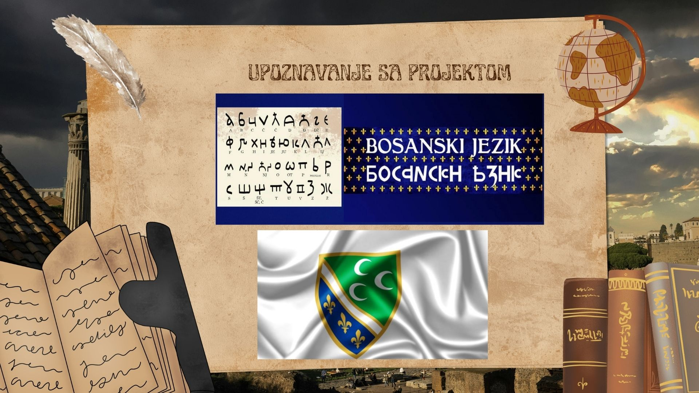
Savremeno društvo donosi brojne promjene koje posebno snažno utiču na mlade. Globalizacija, migracije, digitalizacija, promjene na tržištu rada, savremeni obrazovni procesi i novi načini komunikacije mijenjaju svakodnevni život mladih i utiču na način na koji razumiju sebe, svoje okruženje i vlastitu budućnost. U tom kontekstu, pitanja identiteta, pripadnosti, obrazovanja, društvenog angažmana i očuvanja kulturnog nasljeđa postaju posebno značajna za mlade Bošnjake u Crnoj Gori.
Projekat „Mladi Bošnjaci i izazovi modernog društva“, čija je autorica Tima Agović, nastao je sa ciljem da otvori prostor za promišljanje o položaju, potrebama, izazovima i perspektivama mladih Bošnjaka u savremenom društvu. Kroz različite tekstove i tematske cjeline obrađuju se pitanja koja su važna za razumijevanje života mladih – od identiteta i osjećaja pripadnosti, preko obrazovanja i profesionalnih mogućnosti, do društvenog angažmana, kulturnog nasljeđa, migracija i odnosa između tradicije i savremenosti.
Posebna pažnja posvećena je pitanju identiteta. Šta danas znači biti Bošnjak? Kako mladi doživljavaju pripadnost i koliko su povezani sa jezikom, kulturom, historijom i tradicijom? Na koji način moguće je očuvati vlastiti identitet u vremenu globalizacije, a istovremeno ostati otvoren prema drugim kulturama i društvenim vrijednostima? Ovo su pitanja na koja nije moguće dati jedan univerzalan odgovor, jer mladi Bošnjaci predstavljaju raznoliku generaciju čija iskustva zavise od mjesta u kojem žive, obrazovanja, porodičnog okruženja, životnih iskustava i ličnih izbora.
Jedna od važnih tema jeste i odnos između nasljeđa i budućnosti. Svaka generacija dobija određeno kulturno i historijsko nasljeđe, ali ga istovremeno prilagođava vremenu u kojem živi. Očuvanje identiteta zato ne podrazumijeva samo čuvanje prošlosti, već i stvaranje novih načina da jezik, kultura, tradicija i historijsko pamćenje budu relevantni mladim generacijama. Mladi ne treba da budu samo čuvari onoga što su naslijedili, već i aktivni učesnici u oblikovanju onoga što će ostaviti generacijama koje dolaze.
Obrazovanje predstavlja još jedan ključni segment položaja mladih. Znanje i obrazovanje ne određuju samo mogućnost zapošljavanja i profesionalnog razvoja, već i sposobnost mladih da razumiju društvo u kojem žive, donose samostalne odluke i aktivno učestvuju u javnom životu. Zato se perspektiva mladih ne može posmatrati odvojeno od pitanja obrazovnih mogućnosti, ekonomskog položaja i stvaranja uslova za dostojanstven život.
Poseban izazov predstavljaju migracije i odlazak mladih. Sve veći broj mladih svoje obrazovanje, zaposlenje ili životnu perspektivu pronalazi izvan mjesta iz kojeg potiče. Odlazak može donijeti nova iskustva, znanja i mogućnosti, ali istovremeno otvara pitanje veze sa zajednicom i kulturnim identitetom. Savremene tehnologije pružaju mogućnost da se te veze očuvaju i razvijaju, pa dijaspora i mladi koji žive van Crne Gore mogu predstavljati važan potencijal za razmjenu znanja, iskustava i novih ideja.
Važna tema projekta jeste i društveni angažman mladih. Mladi Bošnjaci nisu samo budući nosioci društvenih procesa – oni su njihovi aktivni učesnici već danas. Njihovo uključivanje u kulturne, obrazovne, društvene i lokalne inicijative može doprinijeti jačanju zajednice, ali i širem društvenom razvoju. Potrebno je stvarati prostor u kojem će mladi moći govoriti o svojim potrebama, pokretati inicijative, predlagati rješenja i učestvovati u procesima koji utiču na njihov život.
Tekstovi koji se nalaze na ovom sajtu nastoje otvoriti upravo takav prostor za razmišljanje i razgovor. Oni ne nude konačne odgovore niti pokušavaju predstaviti mlade Bošnjake kao homogenu grupu sa istim iskustvima i stavovima. Naprotiv, cilj je ukazati na različite dimenzije njihovog položaja i podstaći širi razgovor o tome šta mladima treba, sa kakvim se izazovima suočavaju i kakve mogućnosti imaju za izgradnju vlastite budućnosti.
Ovaj projekat polazi od uvjerenja da očuvanje identiteta i otvorenost prema savremenom društvu nisu suprotstavljeni procesi. Moguće je njegovati vlastitu kulturu, jezik i nasljeđe, a istovremeno biti obrazovan, savremen, mobilan i otvoren prema različitim društvima i kulturama. Upravo u pronalaženju ravnoteže između korijena i budućnosti nalazi se jedan od važnih izazova sa kojima se suočava nova generacija.
Web sajt je zamišljen kao prostor informisanja, promišljanja i otvaranja pitanja koja se tiču mladih Bošnjaka i njihovog mjesta u savremenom društvu. Kroz objavljene tekstove čitaoci su pozvani da sagledaju različite aspekte identiteta, obrazovanja, kulture, migracija, društvenog angažmana i budućnosti mladih, ali i da o tim pitanjima razmišljaju iz vlastite perspektive.
Svi tekstovi I fotografije objavljeni na ovom sajtu nastali su u okviru projekta „Mladi Bošnjaci i izazovi modernog društva“, čija je autorica Tima Agović, uz podršku Fonda za manjine.
Napomena: Stavovi, mišljenja i zaključci izneseni u tekstovima predstavljaju isključivo stavove autorice i ne moraju nužno odražavati stavove, mišljenja ili politike donatora, odnosno Fonda za manjine. Za sadržaj i iznesene stavove odgovorna je autorica projekta.
Objavljeno: 09.08.2026
MLADI BOŠNJACI IZMEĐU IDENTITETA, IZAZOVA I BUDUĆNOSTI
Mladi Bošnjaci u Crnoj Gori nalaze se na raskršću između vrijednosti koje nasljeđuju i svijeta koji se ubrzano mijenja. Njihov položaj danas oblikuju istovremeno svijest o vlastitom identitetu, savremeni društveni i ekonomski izazovi, ali i potreba da pronađu svoje mjesto u budućnosti. Upravo zbog toga pitanje mladih Bošnjaka nije samo pitanje očuvanja identiteta, već i pitanje njihovog obrazovanja, profesionalnog razvoja, društvene participacije i sposobnosti da aktivno učestvuju u oblikovanju društva kojem pripadaju.
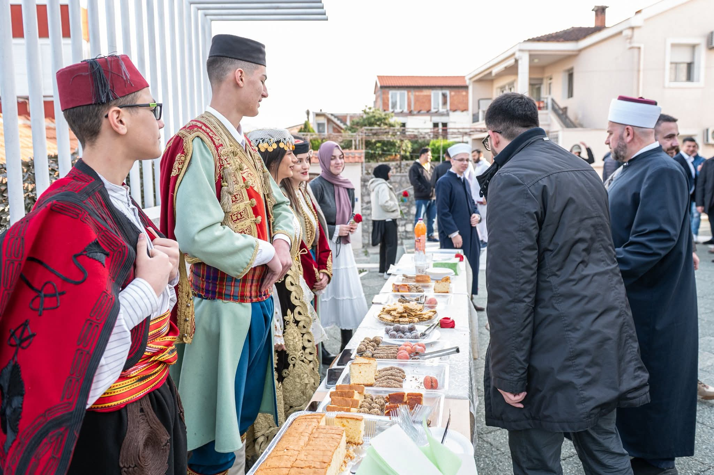
Identitet je jedan od najvažnijih elemenata individualnog i kolektivnog osjećaja pripadnosti. Za mlade Bošnjake on podrazumijeva odnos prema jeziku, kulturi, tradiciji, historiji, porodici i vrijednostima koje se prenose između generacija. Međutim, identitet mladih danas nastaje u mnogo složenijem okruženju nego ranije. Globalizacija, društvene mreže, migracije, dostupnost različitih kulturnih sadržaja i intenzivna komunikacija sa svijetom mijenjaju način na koji mladi razumiju sebe i svoju pripadnost.
Zato očuvanje identiteta ne bi trebalo shvatiti kao zatvaranje prema drugima, već kao sposobnost da se vlastito nasljeđe razumije, cijeni i razvija u savremenom kontekstu. Mladi Bošnjak ne mora birati između svog identiteta i modernosti. Naprotiv, savremeni identitet može istovremeno biti ukorijenjen u tradiciji i otvoren prema novim znanjima, idejama i iskustvima.
Najveći izazov predstavlja upravo pronalaženje te ravnoteže. Tradicija bez prilagođavanja novom vremenu može izgubiti kontakt sa mladim generacijama, dok potpuno zanemarivanje kulturnog i identitetskog nasljeđa može dovesti do slabljenja osjećaja pripadnosti. Između ta dva ekstrema postoji prostor u kojem mladi mogu izgraditi identitet koji je autentičan, samouvjeren i sposoban da odgovori na zahtjeve savremenog društva.
Pored identitetskih pitanja, mladi Bošnjaci suočavaju se sa izazovima koji su karakteristični za mlade u savremenoj Crnoj Gori: neizvjesnošću na tržištu rada, nedostatkom perspektive, ekonomskom zavisnošću, odlaskom mladih, ali i osjećajem da njihovi glasovi često nisu dovoljno zastupljeni u procesima donošenja odluka. Ovi problemi direktno utiču na odnos mladih prema sopstvenoj budućnosti.
Posebno zabrinjava činjenica da odlazak mladih sve češće postaje očekivani životni put. Kada obrazovani i ambiciozni mladi ljudi ne vide dovoljno mogućnosti za profesionalni i lični razvoj u sredini u kojoj su odrasli, odlazak postaje racionalan izbor. Dugoročno, međutim, takav trend može oslabiti društveni potencijal čitavih zajednica.
Zato pitanje budućnosti mladih Bošnjaka ne može biti odvojeno od pitanja stvaranja uslova u kojima će oni moći da ostvare svoje potencijale. Potrebno je stvarati društvo u kojem pripadnost zajednici nije samo simbolička vrijednost, već i prostor u kojem mladi mogu učiti, raditi, stvarati, napredovati i učestvovati u donošenju odluka.
Posebnu ulogu u tome imaju obrazovanje i znanje. Savremeni identitet ne može se zasnivati samo na poznavanju prošlosti; on mora uključivati sposobnost razumijevanja sadašnjosti i aktivnog učestvovanja u budućnosti. Mladi Bošnjaci moraju imati mogućnost da budu ravnopravni učesnici u oblastima nauke, tehnologije, preduzetništva, kulture, umjetnosti, politike i civilnog društva.
Istovremeno, potrebno je razvijati i novi odnos prema samom pojmu zajednice. Zajednica ne može biti samo prostor kojem mladi pripadaju. Ona treba biti prostor koji prepoznaje njihove potrebe, sluša njihove stavove i daje im priliku da preuzmu odgovornost. Mladi ne bi trebalo da budu posmatrani samo kao budući nosioci društva. Oni su već sada njegov važan dio i njihovo učešće mora biti stvarno, a ne samo deklarativno.
Budućnost će, stoga, zavisiti i od toga koliko će mladi Bošnjaci biti spremni da sami oblikuju svoj društveni položaj. Očuvanje identiteta nije zadatak samo porodice, vjerskih institucija, kulturnih organizacija ili političkih predstavnika. To je proces u kojem mladi moraju imati aktivnu ulogu. Oni treba da budu kreatori novih kulturnih sadržaja, pokretači društvenih inicijativa, istraživači vlastite prošlosti, ali i ljudi koji će stvarati nove vrijednosti.
U tom smislu, identitet ne treba posmatrati kao teret prošlosti, već kao potencijal za budućnost. Mladi koji poznaju svoje korijene mogu sigurnije graditi vlastiti put, ali samo ukoliko im društvo omogući prostor za razvoj, kritičko mišljenje i slobodu izbora.
Mladi Bošnjaci se zato nalaze između tri ključna pitanja: ko smo, sa kojim se izazovima suočavamo i kakvu budućnost želimo. Od odgovora na ta pitanja zavisi ne samo njihov individualni razvoj, već i budućnost bošnjačke zajednice u Crnoj Gori.
Najvažnije je, međutim, razumjeti da budućnost nije nešto što se mladima jednostavno događa. Ona je prostor koji oni mogu oblikovati. Ako budu imali znanje, mogućnosti, podršku i slobodu da učestvuju, mladi Bošnjaci neće biti samo čuvari postojećeg identiteta. Oni mogu postati generacija koja će taj identitet učiniti savremenijim, vidljivijim i snažnijim.
Zato se između identiteta, izazova i budućnosti ne nalazi zid, već veza. Identitet daje osjećaj pripadnosti, suočavanje sa izazovima razvija odgovornost, a vizija budućnosti daje smisao djelovanju. Upravo na tom prostoru treba posmatrati mlade Bošnjake – ne kao pasivne nasljednike prošlosti, već kao aktivne stvaraoce budućnosti.
Objavljeno: 11.08.2026
BOŠNJAČKI IDENTITET MLADIH: IZMEĐU TRADICIJE I SAVREMENOSTI
Bošnjački identitet mladih danas se oblikuje u prostoru između naslijeđa prošlosti i zahtjeva savremenog društva. To je prostor u kojem se susreću porodične vrijednosti, jezik, kultura, vjera, historijsko pamćenje i tradicija sa globalnim uticajima, digitalnom kulturom, savremenim načinom života i novim oblicima društvene komunikacije. Zbog toga identitet mladih Bošnjaka nije moguće posmatrati kao nepromjenjivu kategoriju. On je živ proces koji se iz generacije u generaciju preispituje, nadograđuje i prilagođava novim okolnostima.
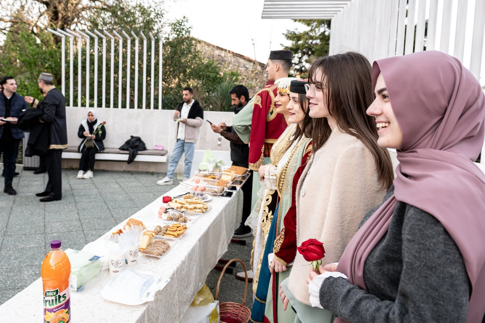
Tradicionalno razumijevanje identiteta često počiva na osjećaju pripadnosti zajednici i svijesti o zajedničkom kulturnom i historijskom nasljeđu. Porodica u tom procesu ima posebno mjesto. Kroz porodicu se prenose jezik, običaji, porodična sjećanja, vrijednosti i obrasci ponašanja koji mladom čovjeku daju prvi osjećaj pripadnosti. Međutim, u savremenom društvu porodica više nije jedini prostor u kojem se identitet oblikuje.
Mladi danas odrastaju pod snažnim uticajem škole, vršnjaka, medija, interneta i društvenih mreža. Digitalni prostor omogućio je neposredan kontakt sa različitim kulturama, vrijednostima i životnim stilovima. Mladi Bošnjaci tako istovremeno pripadaju lokalnoj zajednici i globalnom svijetu. Oni mogu biti duboko povezani sa vlastitim kulturnim nasljeđem, a istovremeno svakodnevno komunicirati, učiti i stvarati u prostoru koji ne poznaje nacionalne i geografske granice.
Upravo zbog toga savremeni bošnjački identitet mladih ne treba posmatrati kroz pitanje „tradicija ili savremenost“. Pravo pitanje jeste kako tradiciju učiniti dijelom savremenosti.
Tradicija koja se samo reprodukuje bez razumijevanja može izgubiti svoju vrijednost među mladima. Međutim, tradicija koja se objašnjava, istražuje i predstavlja na savremen način može postati snažan izvor identiteta. Mladi ne moraju prihvatati sve što im je naslijeđeno samo zato što pripada prošlosti. Oni imaju pravo da postavljaju pitanja, preispituju postojeće obrasce i biraju koje će vrijednosti prenijeti u budućnost.
Takav odnos prema tradiciji ne predstavlja njeno odbacivanje. Naprotiv, on predstavlja znak njene vitalnosti. Svaka kultura koja želi da traje mora imati sposobnost da razgovara sa novim generacijama.
Poseban značaj u tom procesu ima jezik. Jezik nije samo sredstvo komunikacije već i jedan od ključnih nosilaca kulturnog pamćenja. Kroz jezik se prenose književnost, usmena tradicija, porodične priče, izrazi i načini razumijevanja svijeta. Međutim, savremeni mladi istovremeno koriste više jezičkih i kulturnih kodova, naročito u digitalnom prostoru. Zbog toga očuvanje jezičkog i kulturnog identiteta ne može biti zasnovano samo na formalnim normama, već i na stvaranju sadržaja koji mladima omogućava da vlastiti jezik i kulturu doživljavaju kao savremene i relevantne.
Slično je i sa kulturnim nasljeđem. Bošnjačka kultura ne bi trebalo da bude predstavljena mladima samo kroz prošlost i tradicionalne forme. Ona može biti prisutna kroz savremenu književnost, muziku, film, dizajn, fotografiju, digitalne medije.
Objavljeno: 12.08.2026
KO SU MLADI BOŠNJACI DANAS? IDENTITET, VRIJEDNOSTI I PERSPEKTIVE
Mladi Bošnjaci u Crnoj Gori danas predstavljaju generaciju koja svoj identitet, vrijednosti i životne perspektive gradi u vremenu brzih društvenih, tehnoloških i kulturnih promjena. Njihovo iskustvo oblikuju porodica, tradicija i kulturno nasljeđe, ali istovremeno i obrazovanje, savremeni način života, digitalne tehnologije, društvene mreže, migracije i sve snažnija povezanost sa globalnim društvenim tokovima. Zbog toga se identitet mladih Bošnjaka ne može posmatrati kao statična kategorija, već kao dinamičan proces u kojem se tradicija i savremenost neprestano susreću i međusobno oblikuju.
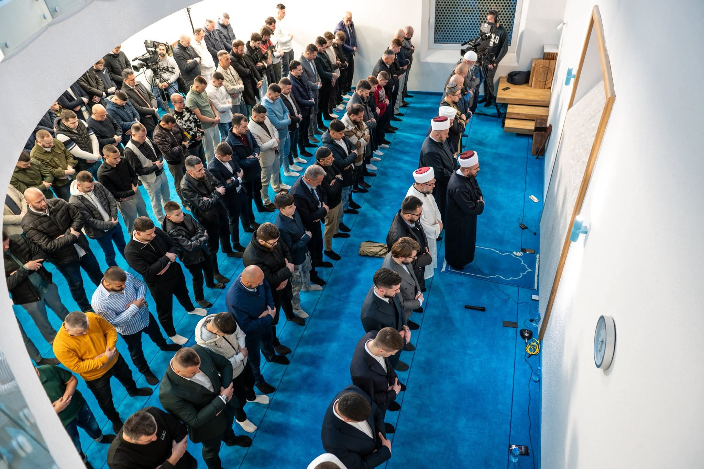
Hadrovica dzamija u Podgorici, mladi dzematlije
Bošnjački identitet kod mladih najčešće se vezuje za osjećaj pripadnosti, porodično i kulturno nasljeđe, jezik, običaje, vjeru, historijsko pamćenje i vrijednosti koje se prenose kroz generacije. Međutim, način na koji mladi danas doživljavaju i izražavaju svoju pripadnost značajno se razlikuje od prethodnih generacija. Savremeni mladi žele da čuvaju ono što smatraju vrijednim iz vlastitog nasljeđa, ali istovremeno žele da budu dio modernog, otvorenog i demokratskog društva. Za njih pripadnost vlastitoj zajednici ne mora predstavljati granicu prema drugima, već može biti osnova za izgradnju identiteta koji podrazumijeva poštovanje različitosti, toleranciju i ravnopravnost.
Poseban uticaj na formiranje identiteta mladih imaju digitalne tehnologije i društvene mreže. Internet je postao prostor u kojem mladi ne samo da komuniciraju i informišu se, već i predstavljaju sebe, svoje vrijednosti i kulturu. Putem digitalnih platformi moguće je povezivanje mladih iz različitih krajeva Crne Gore, ali i sa bošnjačkom dijasporom i ljudima širom svijeta. Istovremeno, globalni kulturni uticaji mijenjaju njihove navike, interesovanja i način razmišljanja. Upravo zbog toga digitalni prostor predstavlja i izazov i veliku priliku za očuvanje i savremenu afirmaciju bošnjačkog identiteta.
Mladi Bošnjaci danas sve više naglašavaju značaj obrazovanja, profesionalnog razvoja, ekonomske sigurnosti, lične slobode, ravnopravnosti i mogućnosti da aktivno učestvuju u društvenom životu. Oni žele da budu prepoznati po svom znanju, radu, sposobnostima i rezultatima, a ne samo kroz pripadnost određenoj etničkoj zajednici. Istovremeno, žele društvo u kojem će imati jednake mogućnosti za obrazovanje, zapošljavanje i napredovanje, kao i prostor da slobodno izražavaju svoj identitet i stavove.
Jedan od najvećih izazova sa kojima se suočava ova generacija jeste odlazak mladih u veće urbane sredine i inostranstvo u potrazi za boljim obrazovanjem, zaposlenjem i kvalitetnijim životnim uslovima. Odlazak mladih ne znači nužno prekid veze sa zajednicom, ali može oslabiti društvene i kulturne veze sa sredinama iz kojih potiču. Zbog toga je važno stvarati uslove u kojima će mladi imati perspektivu za lični i profesionalni razvoj u Crnoj Gori, uz mogućnost da istovremeno budu povezani sa regionalnim i međunarodnim prilikama.
Važno je, međutim, naglasiti da mladi Bošnjaci nijesu homogena grupa. Njihova iskustva, stavovi i potrebe razlikuju se u zavisnosti od mjesta u kojem žive, obrazovanja, ekonomskog položaja, porodičnog okruženja, ličnih uvjerenja i životnih planova. Upravo zato razumijevanje položaja mladih zahtijeva otvoren dijalog i neposredno uključivanje mladih u istraživanje pitanja koja ih se tiču. Umjesto da se o mladima govori bez njihovog učešća, potrebno je stvoriti prostor u kojem će oni sami govoriti o svojim iskustvima, problemima, vrijednostima i očekivanjima.
Budućnost mladih Bošnjaka u Crnoj Gori zato nije samo pitanje očuvanja identiteta, već i pitanje njihovog punog društvenog učešća. Mladi treba da budu aktivni učesnici u obrazovanju, kulturi, civilnom društvu, preduzetništvu, medijima i procesima donošenja odluka. Njihov glas treba da bude prisutan u javnom prostoru, a njihove ideje i potrebe uzete u obzir prilikom kreiranja politika koje određuju njihovu budućnost.
Mladi Bošnjaci danas stoje između bogatog kulturnog nasljeđa i svijeta koji se brzo mijenja. Njihov izazov nije da biraju između tradicije i savremenosti, već da pronađu način da vrijednosti svog nasljeđa prilagode vremenu u kojem žive, sačuvaju ono što ih povezuje sa prethodnim generacijama i istovremeno slobodno grade vlastiti put. Upravo u toj sposobnosti da spoje identitet, znanje, otvorenost i društvenu odgovornost nalazi se njihov najveći potencijal. Razumjeti mlade Bošnjake znači razumjeti ne samo njihove probleme, već i njihove ambicije, ideje i viziju budućnosti koju žele da grade za sebe, svoju zajednicu i društvo kojem pripadaju.
Objavljeno: 13.08.2026
MLADI BOŠNJACI U SAVREMENOM DRUŠTVU: IZMEĐU PRIPADNOSTI I IZAZOVA
Savremeno društvo donosi velike promjene u načinu na koji mladi oblikuju svoj identitet, grade odnose sa zajednicom i promišljaju vlastitu budućnost. Mladi Bošnjaci u Crnoj Gori dio su tih promjena i njihovo iskustvo odražava složen odnos između osjećaja pripadnosti, očuvanja kulturnog nasljeđa i potrebe za aktivnim učešćem u savremenim društvenim tokovima. Njihov položaj nije moguće razumjeti samo kroz etničku pripadnost, već i kroz obrazovanje, zapošljavanje, ekonomske mogućnosti, digitalnu povezanost, društvenu participaciju i lične životne izbore.
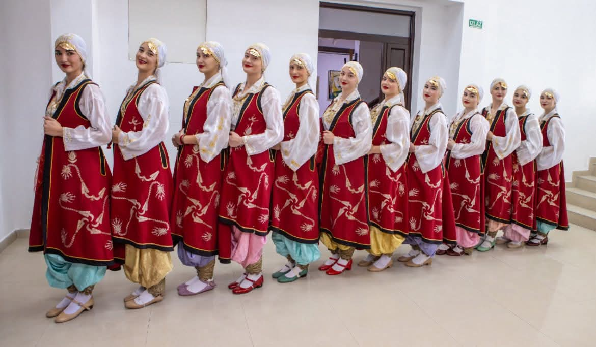
Foto: CZK Rozaje
Pripadnost bošnjačkoj zajednici za mnoge mlade predstavlja važan dio ličnog i kolektivnog identiteta. Porodica, tradicija, jezik, kultura, vjera, običaji i historijsko nasljeđe predstavljaju elemente koji povezuju generacije i daju osjećaj kontinuiteta. Ipak, način na koji mladi doživljavaju svoju pripadnost danas je drugačiji nego ranije. Generacije koje odrastaju u vremenu interneta i globalne komunikacije imaju priliku da upoznaju različite kulture, vrijednosti i načine života, pa se njihov identitet oblikuje kroz stalni susret lokalnog i globalnog. Zbog toga savremeni bošnjački identitet mladih ne treba posmatrati kao zatvoren i nepromjenjiv okvir, već kao identitet koji se razvija i prilagođava novim okolnostima.
Jedan od najvažnijih izazova jeste očuvanje kulturnog identiteta u vremenu ubrzane globalizacije. Mladi danas imaju pristup ogromnom broju informacija i sadržaja koji dolaze iz različitih djelova svijeta. To otvara prostor za nova znanja, kreativnost i povezivanje, ali istovremeno postavlja pitanje načina na koji se kulturno nasljeđe prenosi na nove generacije. Očuvanje identiteta zato ne podrazumijeva samo čuvanje tradicionalnih obrazaca, već i njihovo savremeno predstavljanje. Mladi mogu biti nosioci tog procesa kroz kulturu, umjetnost, muziku, književnost, medije i digitalne platforme, stvarajući nove načine da bošnjačko kulturno nasljeđe učine vidljivim i relevantnim u savremenom društvu.
Digitalni prostor posebno je značajan za ovu generaciju. Društvene mreže više nijesu samo sredstvo komunikacije, već prostor u kojem se oblikuju stavovi, identiteti i društvene veze. One omogućavaju mladima da se povežu sa vršnjacima iz različitih krajeva Crne Gore, regiona i dijaspore, ali i da predstave vlastitu kulturu i iskustva široj javnosti. Istovremeno, digitalni prostor može doprinijeti većoj vidljivosti problema sa kojima se mladi suočavaju i omogućiti im da direktno učestvuju u javnim raspravama. Na taj način tehnologija može postati važan alat za društvenu participaciju i afirmaciju mladih.
Pored pitanja identiteta, mladi se suočavaju sa izazovima koji su zajednički velikom broju mladih ljudi u savremenom društvu – pitanjima obrazovanja, zapošljavanja, ekonomske sigurnosti i mogućnosti za profesionalni razvoj. Nedostatak perspektive i ograničene mogućnosti za ostvarivanje životnih planova mogu uticati na odluku mladih da napuste svoje sredine i potraže bolje prilike u drugim gradovima ili državama. Odlazak mladih predstavlja izazov ne samo za pojedinca i njegovu porodicu, već i za lokalne zajednice, jer dugoročno može uticati na njihov demografski, ekonomski i društveni razvoj.
Istovremeno, mladi Bošnjaci nijesu samo grupa koja se suočava sa izazovima. Oni predstavljaju značajan društveni potencijal. Njihovo obrazovanje, kreativnost, digitalne vještine, preduzetničke ideje i spremnost na povezivanje mogu biti važan pokretač razvoja zajednice i društva u cjelini. Da bi taj potencijal bio iskorišćen, neophodno je omogućiti mladima da budu aktivni učesnici u procesima koji oblikuju njihovu budućnost. Njihovo uključivanje ne treba ograničiti samo na pitanja koja se direktno odnose na bošnjačku zajednicu, već ih treba posmatrati kao ravnopravne učesnike u društvenom, kulturnom, ekonomskom i političkom životu Crne Gore.
Posebno je važno razvijati prostor za dijalog između mladih i institucija. Omladinske politike imaju smisla samo ukoliko se zasnivaju na stvarnim potrebama mladih i ukoliko mladi imaju priliku da učestvuju u njihovom kreiranju. Zbog toga je potrebno više istraživanja, otvorenih razgovora i inicijativa koje će omogućiti da se čuje glas mladih. Njihova iskustva, stavovi i očekivanja treba da budu osnova za razumijevanje njihovog položaja i kreiranje konkretnih mjera podrške.
Savremeni mladi Bošnjaci nalaze se između dvije važne potrebe: potrebe da sačuvaju osjećaj pripadnosti i kulturni kontinuitet, i potrebe da slobodno grade vlastiti identitet i budućnost u svijetu koji se brzo mijenja. Te dvije potrebe ne moraju biti suprotstavljene. Naprotiv, moguće je istovremeno njegovati vlastito kulturno nasljeđe i biti otvoren prema drugim kulturama, savremenim vrijednostima i globalnim društvenim tokovima.
Upravo zato pitanje mladih Bošnjaka nije samo pitanje identiteta, već i pitanje njihovih mogućnosti. Koliko mogu da se obrazuju, zaposle, pokrenu vlastiti posao, učestvuju u društvenom životu, izraze svoje mišljenje i utiču na odluke koje se tiču njihove budućnosti? Koliko je njihov glas prisutan u javnosti i koliko društvo prepoznaje njihov potencijal? Od odgovora na ova pitanja zavisi i način na koji će mladi oblikovati budućnost svoje zajednice.
Mladi Bošnjaci u savremenom društvu nijesu samo čuvari nasljeđa, već i njegovi novi tumači i kreatori budućnosti. Njihova pripadnost može biti izvor snage, ali samo ako je praćena slobodom, obrazovanjem, mogućnostima i aktivnim učešćem. Zato je potrebno stvarati društveni prostor u kojem će mladi moći da budu ono što jesu, da njeguju svoje kulturne vrijednosti, ali i da slobodno grade vlastite životne puteve. Razumijevanje njihovih potreba i iskustava prvi je korak ka društvu u kojem će mladi Bošnjaci imati ne samo osjećaj pripadnosti, već i stvarnu mogućnost da ravnopravno učestvuju u njegovom oblikovanju.
Objavljeno: 15.08.2026
OČUVANJE IDENTITETA MLADIH BOŠNJAKA U VREMENU PROMJENA
Identitet predstavlja jedan od najvažnijih elemenata ličnog i kolektivnog života svakog pojedinca. On se oblikuje kroz porodicu, jezik, kulturu, tradiciju, vjeru, obrazovanje, društveno okruženje i lična iskustva. Za mlade Bošnjake u Crnoj Gori pitanje identiteta ima poseban značaj, jer se njihova generacija nalazi u vremenu ubrzanih društvenih promjena, snažnog uticaja digitalnih tehnologija, globalizacije, migracija i promjene tradicionalnih obrazaca života. U takvom okruženju očuvanje identiteta ne podrazumijeva samo prenošenje vrijednosti iz prošlosti, već i sposobnost da se te vrijednosti razumiju, razvijaju i izražavaju na način koji odgovara savremenom dobu.
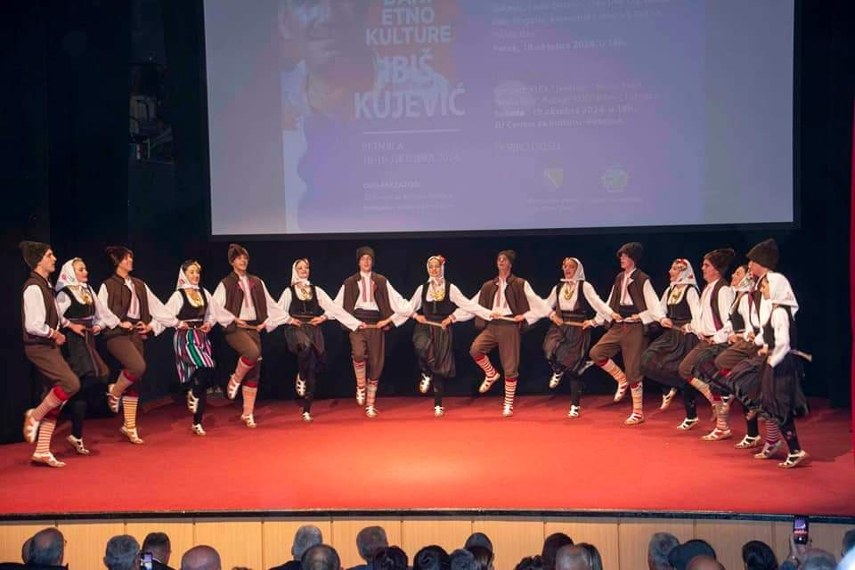
Dani etno Kulture Ibis Kujevic Rozaje. CZK
Bošnjački identitet mladih oblikuje se prije svega kroz porodično i kulturno nasljeđe. Jezik, običaji, tradicija, vjerska pripadnost, kulturna baština i sjećanja prethodnih generacija predstavljaju važne elemente koji povezuju mlade sa njihovim porijeklom i zajednicom. Porodica u tom procesu ima posebno mjesto, jer je često prvi prostor u kojem mladi upoznaju vlastitu kulturu, vrijednosti i tradiciju. Međutim, promjene u načinu života, migracije i sve veća mobilnost stanovništva utiču na tradicionalne oblike prenosa identiteta, zbog čega se javlja potreba za novim načinima njegovog očuvanja i afirmacije.
Savremeni svijet mladima pruža mogućnost da budu povezani sa različitim kulturama i društvima. Internet i društvene mreže omogućili su gotovo neograničenu dostupnost informacija i sadržaja, zbog čega mladi svakodnevno dolaze u kontakt sa različitim vrijednostima, idejama i načinima života. Ovaj proces nije nužno prijetnja identitetu. Naprotiv, digitalno okruženje može predstavljati značajnu priliku za njegovu promociju i razvoj. Mladi mogu koristiti savremene tehnologije kako bi istraživali vlastito porijeklo, dokumentovali kulturno nasljeđe, promovisali jezik, umjetnost, književnost i tradiciju i povezivali se sa drugim pripadnicima zajednice u Crnoj Gori, regionu i dijaspori.
Očuvanje identiteta zato ne treba poistovjećivati sa zatvaranjem prema drugim kulturama i društvenim uticajima. Savremeni identitet može istovremeno biti snažno ukorijenjen u vlastito kulturno nasljeđe i otvoren prema različitostima. Mladi Bošnjaci mogu njegovati svoju pripadnost, a istovremeno biti aktivni i ravnopravni učesnici šireg društvenog prostora. Upravo takav pristup omogućava da identitet ne postane prepreka društvenoj integraciji, već izvor samopouzdanja, kulturne svijesti i aktivnog građanstva.
Poseban izazov predstavlja očuvanje jezika i kulturnih sadržaja među mladima. Jezik nije samo sredstvo komunikacije, već važan nosilac kolektivnog pamćenja i kulturnog identiteta. Zbog toga je njegovo njegovanje od posebnog značaja. Istovremeno, kulturni sadržaji moraju biti dostupni mladima kroz savremene forme komunikacije. Knjiga, arhivski materijali i tradicionalni kulturni sadržaji mogu dobiti novi život kroz digitalne arhive, video produkciju, podkaste, društvene mreže i druge savremene formate koji su bliži novim generacijama.
Važnu ulogu u očuvanju identiteta imaju obrazovne i kulturne institucije, organizacije civilnog društva, mediji i lokalne zajednice. Njihova odgovornost nije samo da čuvaju postojeću kulturnu baštinu, već i da mladima omoguće da aktivno učestvuju u njenom stvaranju i predstavljanju. Kada mladi postanu istraživači, autori, umjetnici, novinari, digitalni kreatori i organizatori kulturnih aktivnosti, oni prestaju biti samo korisnici nasljeđa i postaju njegovi aktivni čuvari i savremeni tumači.
Očuvanje identiteta posebno je povezano sa pitanjem odlaska mladih. Migracije i život u drugim sredinama mogu oslabiti neposrednu povezanost sa lokalnom zajednicom, ali savremene tehnologije omogućavaju da se ta povezanost održi i na daljinu. Dijaspora mladih Bošnjaka može biti važan dio šire zajednice ukoliko postoje načini za kontinuiranu komunikaciju, kulturnu razmjenu i uključivanje u zajedničke projekte. Na taj način geografska udaljenost ne mora značiti i gubitak kulturne pripadnosti.
Istovremeno, važno je razumjeti da svaki mladi čovjek svoj identitet doživljava na individualan način. Ne postoji jedan obrazac prema kojem bi se moglo definisati šta znači biti mlad Bošnjak danas. Neki će identitet snažnije povezivati sa tradicijom i vjerom, drugi sa jezikom i kulturom, treći sa porodičnim porijeklom ili osjećajem pripadnosti zajednici. Različitost tih iskustava ne treba posmatrati kao slabost, već kao prirodan dio savremenog identiteta.
Očuvanje identiteta mladih Bošnjaka u vremenu promjena zato zahtijeva ravnotežu između kontinuiteta i razvoja. Potrebno je sačuvati vrijednosti i kulturne elemente koji predstavljaju važan dio kolektivnog nasljeđa, ali istovremeno omogućiti mladima da ih slobodno interpretiraju i prilagođavaju savremenom životu. Identitet koji se ne razvija može postati udaljen od novih generacija, dok identitet koji se razvija uz svijest o vlastitom porijeklu može postati snažan temelj za budućnost.
Mladi Bošnjaci nijesu samo nasljednici identiteta koji su oblikovale prethodne generacije. Oni su njegovi budući nosioci, ali i njegovi savremeni kreatori. Njihova sposobnost da povežu tradiciju sa obrazovanjem, kulturu sa digitalnim tehnologijama, lokalnu pripadnost sa globalnom povezanošću i kolektivno nasljeđe sa ličnim slobodama predstavlja jednu od ključnih pretpostavki za očuvanje identiteta u budućnosti.
Zato očuvanje bošnjačkog identiteta treba graditi kroz znanje, kulturu, obrazovanje, otvoreni dijalog i aktivno učešće mladih. Najtrajniji identitet nije onaj koji se čuva izolacijom, već onaj koji je dovoljno snažan da se razvija u susretu sa promjenama. U tom smislu, budućnost bošnjačkog identiteta u Crnoj Gori u velikoj mjeri zavisi od toga koliko ćemo mladima omogućiti da upoznaju svoje nasljeđe, razumiju njegov značaj i pronađu vlastiti način da ga prenesu u budućnost.
Objavljeno: 17.08.2026
BOŠNJAČKA OMLADINA IZMEĐU TRADICIJE, MODERNOSTI I NOVIH IZAZOVA
Bošnjačka omladina danas odrasta u društvu koje se mijenja brže nego ikada ranije. Tehnološki razvoj, globalizacija, migracije, promjene na tržištu rada, novi modeli komunikacije i drugačiji društveni obrasci značajno utiču na način na koji mladi razmišljaju o sebi, svojoj zajednici i budućnosti. U takvom okruženju bošnjačka omladina nalazi se između nasljeđa koje je oblikovalo prethodne generacije i savremenog svijeta koji pred njih postavlja nove mogućnosti, ali i brojne izazove.
Tradicija za mlade Bošnjake predstavlja važnu vezu sa porodicom, porijeklom i kulturnim nasljeđem. Jezik, običaji, vjera, kultura, porodične vrijednosti i kolektivno sjećanje predstavljaju elemente kroz koje se razvija osjećaj pripadnosti. Međutim, prenošenje tradicije na nove generacije danas se odvija u drugačijim okolnostima. Mladi imaju mnogo više mogućnosti da upoznaju različite kulture, vrijednosti i stilove života, pa se njihov odnos prema tradiciji sve više zasniva na ličnom razumijevanju i izboru. Zbog toga očuvanje tradicije ne znači samo ponavljanje obrazaca iz prošlosti, već i njihovo razumijevanje i prilagođavanje savremenom vremenu.
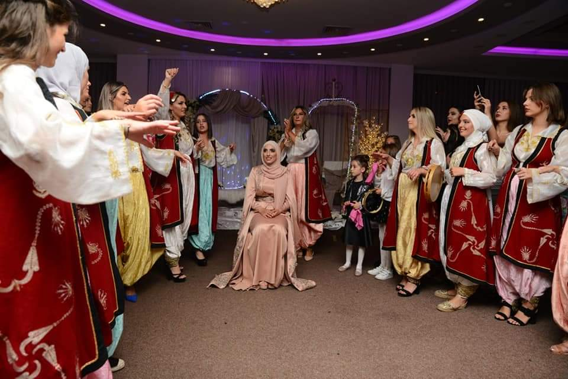
Bosnjacka omladina, foto hotel Aldi Rozaje
Modernost sa sobom donosi promjene koje značajno oblikuju život mladih. Obrazovanje, digitalne tehnologije, društvene mreže, međunarodna mobilnost i dostupnost informacija otvorili su prostor za nove oblike povezivanja i ličnog razvoja. Mladi Bošnjaci danas mogu biti istovremeno snažno povezani sa svojim lokalnim i kulturnim identitetom, a istovremeno dio šireg regionalnog, evropskog i globalnog prostora. Takva višestruka povezanost ne mora predstavljati prijetnju identitetu. Naprotiv, ona može omogućiti mladima da svoju kulturu upoznaju bolje, predstave je drugima i grade identitet koji je otvoren, savremen i zasnovan na poštovanju različitosti.
Jedan od najvećih potencijala savremene generacije jeste upravo mogućnost korišćenja digitalnih tehnologija za afirmaciju kulture i identiteta. Društvene mreže, internet portali, video sadržaji, podkasti i druge digitalne platforme mogu postati prostor za predstavljanje bošnjačke kulture, umjetnosti, književnosti, tradicije i savremenog stvaralaštva. Mladi više nijesu samo publika kojoj se kulturni sadržaj prenosi; oni postaju njegovi autori, producenti i promotori. Na taj način tradicionalne vrijednosti mogu dobiti nove forme i postati dostupne generacijama koje odrastaju u digitalnom okruženju.
Istovremeno, pred bošnjačkom omladinom nalaze se brojni izazovi koji prevazilaze pitanja identiteta. Obrazovanje i zapošljavanje, ekonomska sigurnost, mogućnost profesionalnog napredovanja i kvalitet života predstavljaju pitanja od kojih u velikoj mjeri zavisi odluka mladih da svoju budućnost grade u sredini iz koje potiču. Nedostatak odgovarajućih prilika može dovesti do odlaska mladih u druge gradove ili države, čime se gubi dio potencijala koji bi mogao biti važan za razvoj lokalnih zajednica.
Odlazak mladih posebno je značajan jer migracija nije samo demografsko pitanje. Ona utiče i na društvene veze, kulturni kontinuitet i budućnost zajednice. Ipak, odlazak ne mora nužno značiti prekid pripadnosti. Savremene tehnologije omogućavaju mladima koji žive van Crne Gore da ostanu povezani sa porodicom, prijateljima i zajednicom iz koje potiču. Zbog toga je važno razvijati modele koji će omogućiti povezivanje mladih u zemlji i dijaspori i njihovo uključivanje u zajedničke kulturne, obrazovne, društvene i razvojne inicijative.
Važan izazov predstavlja i pitanje društvene participacije. Mladi žele da njihov glas bude prepoznat i da imaju mogućnost da utiču na odluke koje oblikuju njihovu budućnost. Njihovo učešće ne treba ograničiti samo na formalne političke strukture. Omladinske organizacije, kulturne inicijative, civilni sektor, obrazovne institucije, mediji, preduzetništvo i digitalne platforme predstavljaju prostore kroz koje mladi mogu izraziti svoje ideje i pokrenuti konkretne promjene. Društvo koje želi da zadrži mlade mora ih posmatrati kao aktivne učesnike, a ne samo kao korisnike postojećih politika i programa.
Posebno je važno razumjeti da bošnjačka omladina nije homogena grupa. Mladi se razlikuju prema mjestu u kojem žive, obrazovanju, interesovanjima, ekonomskim mogućnostima, odnosu prema tradiciji i različitim životnim iskustvima. Upravo ta raznolikost predstavlja bogatstvo zajednice. Zbog toga je potrebno stvarati prostor u kojem će svaki mladi čovjek moći slobodno da izrazi svoj identitet, stavove i potrebe, bez nametanja jedinstvenog modela pripadnosti.
Odnos između tradicije i modernosti zato ne treba posmatrati kao sukob. Tradicija može predstavljati temelj na kojem mladi grade svoju budućnost, dok modernost pruža nove alate i mogućnosti za razvoj. Pravi izazov jeste pronaći ravnotežu između očuvanja onoga što predstavlja vrijednost i prihvatanja promjena koje donosi savremeno društvo. Mladi koji poznaju svoje korijene lakše mogu graditi otvoren odnos prema svijetu, jer sigurnost u vlastiti identitet ne zahtijeva zatvorenost prema drugima.
Bošnjačka omladina predstavlja važan društveni potencijal Crne Gore. Njena budućnost zavisi od kvaliteta obrazovanja, mogućnosti zapošljavanja, društvene uključenosti, kulturne afirmacije i prostora koji joj je dat da učestvuje u donošenju odluka. Istovremeno, budućnost bošnjačke zajednice u velikoj mjeri zavisi od toga da li će mladi prepoznati vrijednost vlastitog nasljeđa i dobiti dovoljno mogućnosti da ga savremeno razvijaju.
Između tradicije i modernosti ne mora postojati granica. Mladi Bošnjaci mogu biti istovremeno čuvari kulturnog nasljeđa i nosioci društvenih promjena. Mogu njegovati jezik, kulturu i običaje, a istovremeno biti obrazovani, digitalno povezani, inovativni i otvoreni prema svijetu. Upravo sposobnost da povežu prošlost i budućnost predstavlja jednu od njihovih najvećih vrijednosti.
Zato je potrebno više ulagati u mlade, slušati njihove potrebe i stvarati prostor za njihove ideje. Očuvanje identiteta nije samo pitanje prošlosti, već i pitanje budućnosti. Ako mladima omogućimo znanje, prilike i slobodu da aktivno učestvuju u društvu, oni mogu postati najvažniji nosioci očuvanja kulturnog nasljeđa, ali i njegovi savremeni kreatori. Budućnost bošnjačke omladine neće biti određena samo izazovima sa kojima se suočava, već prije svega sposobnošću društva da prepozna njen potencijal i pruži joj priliku da ga ostvari.
Objavljeno: 18.08.2026
IDENTITET KAO SNAGA: PERSPEKTIVE MLADIH BOŠNJAKA
Identitet je više od osjećaja pripadnosti. On predstavlja način na koji pojedinac razumije sebe, svoje porijeklo, vrijednosti i mjesto u društvu. Za mlade Bošnjake u Crnoj Gori identitet predstavlja važan dio njihovog ličnog i kolektivnog iskustva, ali i prostor u kojem se susreću prošlost i budućnost, tradicija i savremenost, lokalna pripadnost i globalna povezanost. U vremenu brzih društvenih promjena, pitanje identiteta dobija dodatni značaj, jer mladi istovremeno nastoje sačuvati veze sa svojim kulturnim nasljeđem i pronaći svoje mjesto u savremenom društvu.
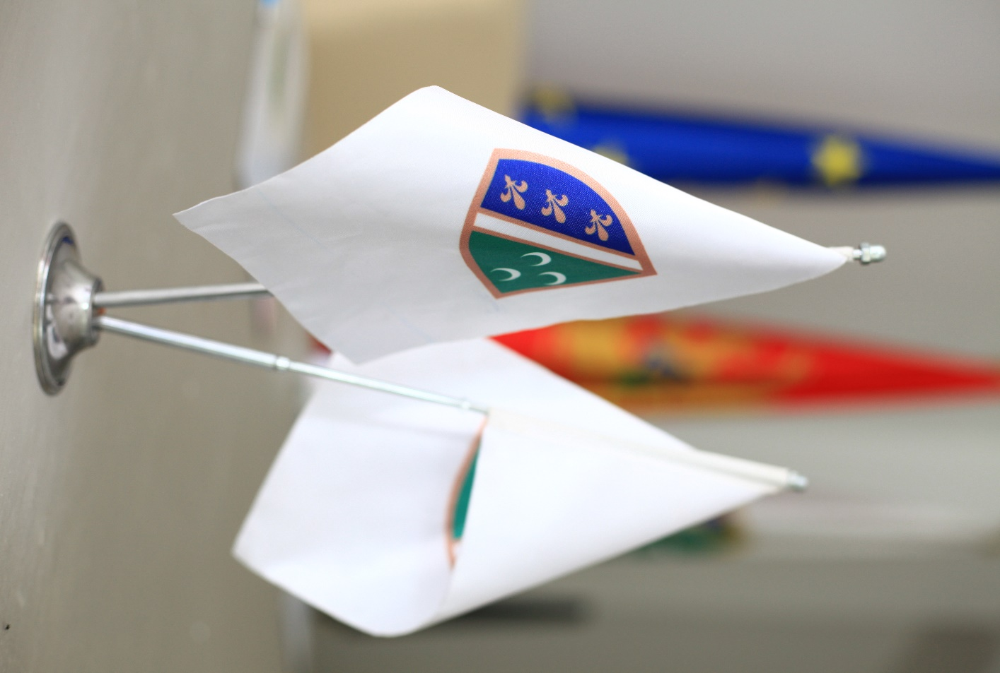
Bošnjački identitet oblikovan je kroz bogato kulturno i historijsko nasljeđe koje se prenosi generacijama. Porodica, jezik, običaji, vjera, kultura, književnost, umjetnost i kolektivno sjećanje predstavljaju važne elemente tog nasljeđa. Za mlade, međutim, pripadnost nije samo ono što su naslijedili, već i ono što sami prihvataju, razvijaju i prenose dalje. Upravo u tome nalazi se posebna vrijednost savremenog identiteta – on nije nepromjenjiv, već se oblikuje kroz lična iskustva, obrazovanje, komunikaciju i svakodnevni život.
Mladi Bošnjaci odrastaju u društvu u kojem granice između lokalnog i globalnog postaju sve manje izražene. Putem interneta i društvenih mreža svakodnevno su povezani sa ljudima, idejama i kulturama iz različitih djelova svijeta. Takva povezanost mijenja način na koji mladi posmatraju sebe i svoju zajednicu. Međutim, otvorenost prema svijetu ne mora značiti gubitak vlastitog identiteta. Naprotiv, svijest o vlastitom porijeklu može mladima dati dodatnu sigurnost da upoznaju druge kulture, prihvataju različitosti i grade odnose zasnovane na međusobnom poštovanju.
Identitet može biti snaga upravo onda kada mladima pruža osjećaj samopouzdanja, pripadnosti i kontinuiteta. Mladi koji poznaju svoje kulturno nasljeđe imaju mogućnost da ga predstave na savremen način i da u njegov razvoj unesu vlastitu kreativnost. Danas se kultura više ne prenosi samo kroz tradicionalne institucije i oblike komunikacije. Mladi je mogu promovisati kroz digitalne sadržaje, fotografiju, film, muziku, književnost, podkaste, društvene mreže i različite oblike kreativnog izražavanja. Na taj način identitet prestaje biti samo nasljeđe prošlosti i postaje dio savremenog stvaralaštva.
Posebno mjesto u ovom procesu ima jezik. Jezik je jedan od najvažnijih nosilaca kulturnog pamćenja i sredstvo kroz koje se prenose priče, vrijednosti i iskustva jedne zajednice. Njegovanje jezika među mladima zato nije samo pitanje očuvanja kulturne baštine, već i pitanje očuvanja prostora u kojem mladi mogu slobodno izražavati vlastite ideje i iskustva. Istovremeno, potrebno je omogućiti da se jezik i kulturni sadržaji prilagođavaju savremenim načinima komunikacije kako bi ostali bliski novim generacijama.
Perspektiva mladih Bošnjaka ne može se, međutim, svesti samo na kulturna i identitetska pitanja. Njihovu budućnost u velikoj mjeri određuju mogućnosti koje imaju u obrazovanju, zapošljavanju, preduzetništvu i društvenom životu. Mladi žele da svoje znanje i sposobnosti koriste za izgradnju kvalitetnijeg života, ali i da imaju jednake mogućnosti za lični i profesionalni razvoj. Zbog toga je važno da se pitanje identiteta posmatra zajedno sa pitanjem društvene uključenosti i ravnopravnosti.
Jedan od važnih izazova jeste i odlazak mladih. Potraga za boljim obrazovanjem, zaposlenjem i životnim uslovima često ih vodi iz njihovih lokalnih sredina, a nerijetko i izvan Crne Gore. Ipak, odlazak ne mora značiti prekid veze sa zajednicom. Uz savremene tehnologije moguće je održavati kontakte, razmjenjivati iskustva i uključivati mlade koji žive u inostranstvu u kulturne, društvene i razvojne inicijative. Povezivanje mladih u zemlji i dijaspori može predstavljati značajan potencijal za razvoj zajednice.
Važno je prepoznati i raznolikost iskustava među mladim Bošnjacima. Oni nijesu homogena grupa i ne dijele nužno iste stavove, potrebe ili životne ciljeve. Neko će svoj identitet snažnije povezivati sa tradicijom i vjerom, neko sa jezikom i kulturom, dok će drugi pripadnost doživljavati prvenstveno kroz porodično porijeklo i osjećaj zajedništva. Sve te različitosti dio su savremenog identiteta i pokazuju da pripadnost može imati različite oblike.
Upravo zato identitet treba posmatrati kao prostor slobode, a ne kao ograničenje. Biti Bošnjak ne znači odustati od otvorenosti prema drugima, niti znači odreći se savremenih vrijednosti i novih mogućnosti. Naprotiv, snažan identitet može predstavljati osnovu za aktivno građanstvo, toleranciju i spremnost na dijalog. Mladi koji su sigurni u svoje kulturno porijeklo mogu istovremeno biti otvoreni prema različitostima i aktivno doprinositi društvu u kojem žive.
Perspektive mladih Bošnjaka zato treba posmatrati kroz njihove potencijale, a ne samo kroz probleme. Oni posjeduju znanje, kreativnost, digitalne vještine i sposobnost da povezuju različite društvene i kulturne prostore. Njihovo aktivno uključivanje u društveni život može doprinijeti ne samo razvoju bošnjačke zajednice, već i razvoju Crne Gore kao multietničkog i multikulturnog društva.
Da bi identitet zaista bio snaga, potrebno je mladima omogućiti da o njemu govore vlastitim glasom. Njihova iskustva, stavovi, potrebe i vizije budućnosti treba da budu dio javnog prostora. Institucije, obrazovne ustanove, mediji i organizacije civilnog društva imaju važnu ulogu u stvaranju prostora za takav dijalog, ali ključna je spremnost da se mladi ne posmatraju samo kao ciljna grupa, već kao ravnopravni partneri u procesima koji oblikuju njihovu budućnost.
Identitet mladih Bošnjaka može biti snažan temelj za budućnost upravo zato što u sebi može objediniti različite vrijednosti: svijest o vlastitom porijeklu, poštovanje kulturnog nasljeđa, otvorenost prema drugima, obrazovanje, kreativnost i društvenu odgovornost. Njegova snaga ne ogleda se u zatvaranju prema svijetu, već u sposobnosti da se vlastite vrijednosti sačuvaju i razvijaju u dijalogu sa savremenim društvom.
Budućnost pripada generacijama koje će znati da povežu ono što su naslijedile sa onim što žele da stvore. Mladi Bošnjaci imaju priliku da upravo kroz svoje znanje, identitet i aktivno učešće postanu nosioci te promjene. Zato identitet ne treba posmatrati samo kao pitanje prošlosti – on je i pitanje budućnosti, mogućnosti i snage mladih da oblikuju društvo kojem pripadaju.
Objavljeno: 19.08.2026
MLADI BOŠNJACI I IZAZOVI OČUVANJA KULTURNOG I NACIONALNOG IDENTITETA
Očuvanje kulturnog i nacionalnog identiteta predstavlja jedno od važnih pitanja za svaku zajednicu, posebno u vremenu ubrzanih društvenih promjena, globalizacije i sve snažnijeg uticaja savremenih tehnologija. Za mlade Bošnjake u Crnoj Gori ovo pitanje ima dodatnu važnost, jer upravo nova generacija ima ključnu ulogu u očuvanju, razvijanju i prenošenju kulturnog nasljeđa na buduće generacije. Istovremeno, mladi odrastaju u društvenom okruženju koje se brzo mijenja i u kojem su svakodnevno izloženi različitim kulturnim, društvenim i vrijednosnim uticajima.
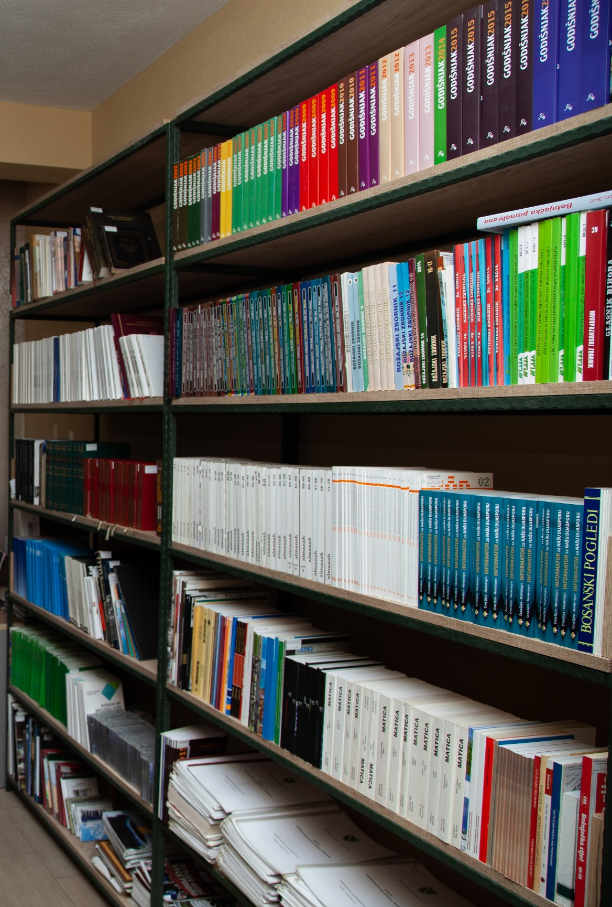
Bošnjačka biblioteka. Izvor BNVCG.ME
Kulturni i nacionalni identitet mladih Bošnjaka oblikuje se kroz različite elemente – jezik, kulturu, tradiciju, običaje, vjeru, porodično nasljeđe, historijsko pamćenje i osjećaj pripadnosti zajednici. Ovi elementi predstavljaju važnu vezu između prošlosti i sadašnjosti, ali njihov značaj ne treba posmatrati isključivo kroz prizmu očuvanja tradicionalnih obrazaca. Identitet se prenosi samo onda kada ga nove generacije razumiju, prihvataju i prepoznaju kao dio vlastitog života. Zbog toga je izazov savremenog doba pronaći način da kulturno nasljeđe bude predstavljeno mladima kroz forme koje su im bliske i razumljive.
Globalizacija je otvorila brojne mogućnosti za povezivanje ljudi, razmjenu znanja i upoznavanje drugih kultura. Mladi danas imaju pristup sadržajima iz gotovo svih djelova svijeta i mogu slobodno istraživati različite vrijednosti, ideje i načine života. Takvo okruženje može obogatiti lično iskustvo, ali istovremeno može dovesti do slabljenja interesovanja za vlastito kulturno nasljeđe ukoliko ono nije dovoljno prisutno u obrazovanju, medijima i javnom prostoru. Zbog toga očuvanje identiteta ne treba zasnivati na izolaciji, već na razvijanju svijesti o vlastitoj kulturi i sposobnosti da se ona predstavi u savremenom društvu.
Posebno značajnu ulogu u ovom procesu imaju internet i društvene mreže. Digitalni prostor predstavlja mjesto na kojem mladi provode značajan dio svog vremena, komuniciraju, informišu se i oblikuju stavove. Zbog toga upravo digitalne platforme mogu postati jedan od najvažnijih prostora za savremenu afirmaciju bošnjačkog kulturnog identiteta. Digitalizacija starih fotografija, dokumenata i zapisa, snimanje priča starijih generacija, predstavljanje tradicionalne kulture, književnosti, muzike i umjetnosti, kao i kreiranje savremenih edukativnih i kreativnih sadržaja, mogu doprinijeti tome da kulturno nasljeđe postane dostupnije i zanimljivije mladima.
U tom procesu mladi ne bi trebalo da budu samo publika, već aktivni učesnici. Njihovo uključivanje u istraživanje i dokumentovanje kulturnog nasljeđa može imati višestruki značaj. Kada mladi sami istražuju historiju svoje porodice, mjesta iz kojeg potiču, lokalne običaje ili priče prethodnih generacija, oni ne samo da čuvaju određeni sadržaj od zaborava, već razvijaju lični odnos prema vlastitom identitetu. Na taj način kulturno nasljeđe prestaje biti nešto što postoji samo u prošlosti i postaje dio živog iskustva savremene generacije.
Jedan od važnih elemenata identiteta jeste i jezik. Jezik predstavlja sredstvo komunikacije, ali i prostor u kojem se čuvaju kolektivno pamćenje, kulturne vrijednosti i iskustva zajednice. Njegovanje jezika među mladima zato predstavlja važan dio očuvanja identiteta. Međutim, savremeni izazov nije samo u njegovom očuvanju, već i u stvaranju kvalitetnog i savremenog sadržaja koji će mladima omogućiti da jezik koriste u obrazovanju, kulturi, medijima i digitalnoj komunikaciji.
Pored jezika i kulturnih sadržaja, važnu ulogu imaju porodica i lokalna zajednica. Porodica je često prvo mjesto na kojem mladi upoznaju tradiciju, običaje i vrijednosti, dok lokalna zajednica pruža prostor za njihovo praktično življenje i prenošenje. Ipak, savremeni način života, urbanizacija i migracije mijenjaju strukturu zajednice i način na koji generacije međusobno komuniciraju. Sve veći broj mladih odlazi iz mjesta u kojima su odrasli, a dio njih svoju budućnost gradi van Crne Gore. Ovakvi procesi predstavljaju izazov za kulturni kontinuitet, ali istovremeno otvaraju mogućnost povezivanja mladih iz različitih sredina i stvaranja šire mreže koja uključuje i dijasporu.
Poseban izazov predstavlja pitanje odnosa prema nacionalnom identitetu u multietničkom društvu. Očuvanje bošnjačkog identiteta ne treba posmatrati kao suprotstavljanje drugim identitetima, niti kao prepreku društvenoj integraciji. Naprotiv, razvijanje svijesti o vlastitom identitetu može biti osnova za bolje razumijevanje i poštovanje drugih. Mladi Bošnjaci mogu istovremeno njegovati vlastitu kulturu i biti aktivni, odgovorni i ravnopravni građani Crne Gore. Upravo kroz dijalog, toleranciju i međusobno poštovanje različitosti moguće je graditi društvo u kojem različiti identiteti predstavljaju bogatstvo, a ne izvor podjela.
Važno je imati u vidu da mladi Bošnjaci ne predstavljaju homogenu grupu. Njihov odnos prema identitetu razlikuje se u zavisnosti od porodičnog okruženja, mjesta življenja, obrazovanja, ličnih uvjerenja, društvenih iskustava i životnih planova. Neki mladi identitet snažno povezuju sa tradicijom, vjerom i kulturom, dok ga drugi više doživljavaju kroz porijeklo, jezik ili osjećaj pripadnosti zajednici. Zbog toga očuvanje identiteta treba da bude zasnovano na uključivom pristupu koji poštuje različita iskustva i omogućava mladima da vlastiti identitet izražavaju na način koji odgovara njihovim uvjerenjima i savremenom načinu života.
Očuvanje kulturnog i nacionalnog identiteta povezano je i sa obrazovanjem. Mladi koji poznaju svoju historiju, kulturu i nasljeđe imaju veće mogućnosti da razumiju značaj identiteta i da ga prenesu dalje. Zbog toga je potrebno podsticati istraživanje kulturne baštine, čitanje, kulturne programe, edukativne projekte i savremene načine predstavljanja historijskih i kulturnih tema. Posebno je važno omogućiti mladima da budu istraživači i autori, jer se identitet najuspješnije prenosi kada nova generacija u njegovom očuvanju vidi vlastiti doprinos.
Očuvanje identiteta ne znači vraćanje u prošlost, već odgovorno povezivanje prošlosti sa budućnošću. Mladi Bošnjaci imaju mogućnost da kulturno nasljeđe sačuvaju, ali i da ga obogate novim idejama, kreativnošću i savremenim oblicima izražavanja. Tradicija koja se prenosi bez razumijevanja može izgubiti vezu sa novim generacijama, dok tradicija koja se savremeno interpretira može postati snažan izvor kreativnosti i zajedništva.
Zato je potrebno stvarati više prostora za mlade da govore o svom identitetu, da istražuju svoje nasljeđe i da učestvuju u njegovom očuvanju. Institucije, obrazovne ustanove, mediji, organizacije civilnog društva i kulturne institucije imaju važnu ulogu u tom procesu, ali njegova održivost u najvećoj mjeri zavisi od samih mladih. Njihove ideje, iskustva i kreativnost mogu biti ključni za stvaranje novih načina očuvanja kulturnog i nacionalnog identiteta.
Budućnost bošnjačkog identiteta u Crnoj Gori neće zavisiti samo od toga koliko ćemo sačuvati iz prošlosti, već i od toga koliko ćemo mladima omogućiti da tu baštinu razumiju, razvijaju i prenose u budućnost. Mladi Bošnjaci mogu biti most između generacija – čuvari kulturnog nasljeđa, ali i njegovi savremeni kreatori. Njihov identitet može biti snažan temelj za lični razvoj, društvenu odgovornost i aktivno građanstvo. Upravo zato očuvanje identiteta treba posmatrati kao proces koji se ne završava čuvanjem prošlosti, već se nastavlja kroz obrazovanje, kulturu, digitalnu komunikaciju, međugeneracijski dijalog i aktivno učešće mladih u društvu.
Objavljeno: 21.08.2026
IZMEĐU KORIJENA I BUDUĆNOSTI: POLOŽAJ MLADIH BOŠNJAKA
Mladi Bošnjaci u Crnoj Gori danas odrastaju između dva snažna pola – korijena koji ih povezuju sa porodičnim, kulturnim i historijskim nasljeđem i budućnosti koju obilježavaju brze društvene promjene, nove tehnologije, obrazovanje, migracije i potreba za stvaranjem boljih životnih uslova. Njihov položaj potrebno je razumjeti upravo kroz tu povezanost prošlosti i budućnosti, jer savremena generacija ne nasljeđuje samo identitet, već dobija i odgovornost da ga oblikuje u skladu sa vremenom u kojem živi.
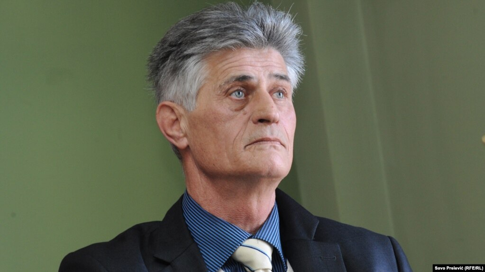
Akademik Šerbo Rastoder, wikipedia
Za mnoge mlade Bošnjake osjećaj pripadnosti predstavlja važan dio ličnog identiteta. Porodica, jezik, kultura, tradicija, vjera, običaji i historijsko pamćenje stvaraju vezu sa generacijama koje su im prethodile. Ti elementi predstavljaju svojevrsne korijene koji mladom čovjeku daju osjećaj kontinuiteta i pripadnosti. Međutim, savremeni život donosi okolnosti u kojima se taj odnos prema nasljeđu mijenja. Mladi danas odrastaju uz mnogo više informacija, različitih kulturnih uticaja i mogućnosti za komunikaciju nego prethodne generacije. Zbog toga se identitet sve više oblikuje kao lični proces u kojem se naslijeđene vrijednosti preispituju, prihvataju i nadograđuju.
Položaj mladih, međutim, ne određuje samo pitanje identiteta. Obrazovanje, zapošljavanje, ekonomska sigurnost i mogućnost profesionalnog razvoja predstavljaju pitanja od ključnog značaja za njihovu budućnost. Mladi žele mogućnost da steknu kvalitetno obrazovanje, razviju svoje sposobnosti i pronađu posao koji će im omogućiti samostalan i dostojanstven život. Kada takve mogućnosti izostanu, odlazak iz lokalne sredine ili države često postaje prirodan izbor. Zbog toga pitanje migracija mladih treba posmatrati šire – kao posljedicu potrebe za boljim prilikama, ali i kao izazov za budući razvoj zajednice.
Odlazak mladih može ostaviti dugoročne posljedice na manje sredine u kojima oni žive. Gubitak obrazovanih i aktivnih mladih ljudi utiče na demografski razvoj, ekonomsku aktivnost, kulturni život i društveni potencijal zajednice. Ipak, savremene tehnologije omogućavaju da se veze sa mladima koji žive van Crne Gore očuvaju i razvijaju. Dijaspora može biti važan resurs kroz prenos znanja, iskustava, ideja i kontakata. Zbog toga buduće inicijative treba da posmatraju mlade u zemlji i van nje kao dio šire povezane zajednice.
Digitalizacija je jedan od faktora koji najviše mijenja život savremene generacije. Internet i društvene mreže mladima omogućavaju da budu povezani sa cijelim svijetom, ali istovremeno otvaraju prostor za očuvanje i promociju vlastite kulture. Bošnjačka omladina može koristiti digitalne platforme za predstavljanje kulturnog nasljeđa, jezika, umjetnosti, književnosti, muzike i tradicije, ali i za pokretanje društvenih inicijativa i povezivanje mladih. Digitalni prostor tako može postati mjesto na kojem se identitet ne samo čuva, već i savremeno oblikuje.
Poseban značaj ima mogućnost mladih da učestvuju u društvenom i javnom životu. Mladi ne žele da budu samo posmatrači procesa koji utiču na njihovu budućnost. Oni žele da budu uključeni u donošenje odluka, kreiranje politika i realizaciju inicijativa koje se odnose na njihovu generaciju. Njihovo učešće može se ostvarivati kroz omladinske organizacije, civilni sektor, kulturu, obrazovanje, medije, preduzetništvo, lokalne inicijative i digitalne platforme. Što je veća mogućnost njihovog učešća, veća je i vjerovatnoća da će se njihove stvarne potrebe prepoznati i pretvoriti u konkretne mjere podrške.
Istovremeno, položaj mladih Bošnjaka treba posmatrati u kontekstu multietničkog i multikulturnog društva Crne Gore. Očuvanje vlastitog identiteta i aktivno učešće u društvu ne predstavljaju suprotstavljene ciljeve. Naprotiv, mladi mogu istovremeno biti ponosni na svoje kulturno nasljeđe i otvoreni prema drugim zajednicama. Snažan osjećaj pripadnosti ne mora voditi podjelama, već može biti osnova za međusobno poštovanje, dijalog i razumijevanje.
Važno je razumjeti i da mladi Bošnjaci nijesu homogena društvena grupa. Njihova iskustva zavise od mjesta u kojem žive, obrazovanja, ekonomskih mogućnosti, porodičnog okruženja, ličnih stavova i životnih planova. Mladi iz urbanih i ruralnih sredina mogu imati različite potrebe i perspektive, kao što se razlikuju iskustva mladih koji ostaju u Crnoj Gori od onih koji odlaze na školovanje ili rad u inostranstvo. Upravo zbog toga politike prema mladima moraju biti zasnovane na stvarnim podacima i iskustvima, a ne na pretpostavkama.
U tom kontekstu posebno je važno čuti glas mladih. Razgovor o njihovom položaju ne može biti potpun ukoliko se o njima govori bez njihovog direktnog učešća. Potrebno je stvarati mehanizme kroz koje će mladi moći da izraze svoje stavove o obrazovanju, zapošljavanju, identitetu, kulturi, društvenoj participaciji i budućnosti. Istraživanja, online upitnici, digitalno mapiranje i javne konsultacije mogu omogućiti da se njihova iskustva sistematski prikupe i pretvore u korisne podatke za institucije i organizacije koje kreiraju programe podrške.
Položaj mladih Bošnjaka zato treba posmatrati kroz dvije paralelne perspektive. Jedna je perspektiva korijena – svijest o tome ko su, odakle dolaze i koje kulturne vrijednosti žele da sačuvaju. Druga je perspektiva budućnosti – kakav život žele, gdje žele da žive, kakvo obrazovanje i posao žele, koliko žele da budu društveno aktivni i kakvu zajednicu žele da ostave generacijama koje dolaze. Između ove dvije perspektive ne mora postojati sukob. Naprotiv, upravo njihovo povezivanje može predstavljati osnovu za snažniji i sigurniji identitet mladih.
Budućnost bošnjačke zajednice u Crnoj Gori u velikoj mjeri zavisi od toga koliko će mladima biti omogućeno da ostanu povezani sa svojim korijenima, ali i da ostvare svoje životne ambicije. Očuvanje identiteta bez stvaranja perspektive za mlade nije dovoljno, kao što ni ekonomske mogućnosti bez osjećaja pripadnosti ne daju potpun odgovor na potrebe jedne zajednice. Potrebno je istovremeno ulagati u obrazovanje, zapošljavanje, kulturu, digitalne kompetencije, društvenu participaciju i razvoj lokalnih sredina.
Mladi Bošnjaci nijesu samo budućnost zajednice – oni su njen aktivni dio već danas. Njihove ideje, znanje, energija i kreativnost predstavljaju važan društveni potencijal. Zato je potrebno stvoriti ambijent u kojem će moći da razvijaju svoje sposobnosti, slobodno izražavaju identitet, učestvuju u društvenim procesima i donose odluke o vlastitoj budućnosti. Između korijena i budućnosti nalazi se prostor u kojem mladi mogu izgraditi vlastiti put – sačuvati ono što smatraju vrijednim, prihvatiti nove mogućnosti i postati aktivni kreatori društva u kojem žele da žive.
Objavljeno: 23.08.2026
GLAS NOVE GENERACIJE: MLADI BOŠNJACI O IDENTITETU I BUDUĆNOSTI
Glas mladih Bošnjaka danas predstavlja važan dio šire slike o društvu, njegovim vrijednostima, izazovima i pravcima razvoja. Nova generacija odrasta u vremenu brzih društvenih promjena, digitalizacije, novih obrazovnih i profesionalnih mogućnosti, ali i izraženih ekonomskih, socijalnih i identitetskih izazova. U takvom okruženju pitanje identiteta više nije samo pitanje pripadnosti, već i pitanje načina na koji mladi razumiju sebe, svoje nasljeđe i svoje mjesto u društvu kojem pripadaju.
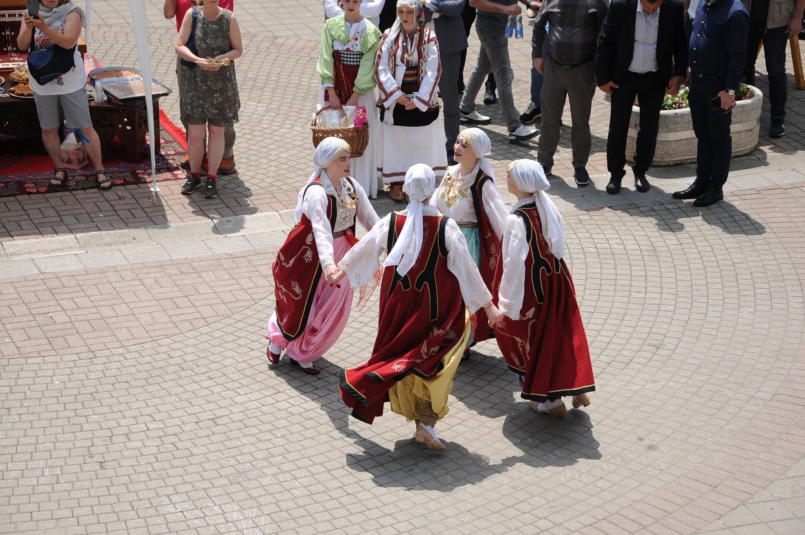
TO Rožaje. Folklorna predstava na Gradskom trgu u Rožajama.
Za mlade Bošnjake identitet se često gradi na spoju porodičnog nasljeđa, jezika, kulture, tradicije, vjere, historijskog pamćenja i ličnih iskustava. Međutim, identitet savremene generacije nije statičan niti se može svesti na unaprijed određene obrasce. On se razvija kroz obrazovanje, prijateljstva, putovanja, digitalne kontakte, profesionalno iskustvo i svakodnevni susret sa različitim kulturama i vrijednostima. Upravo zato mladi danas imaju mogućnost da svoje nasljeđe ne samo čuvaju, već i da ga savremenim načinima izražavanja učine vidljivijim i dostupnijim novim generacijama.
Posebno mjesto u tom procesu zauzima digitalni prostor. Društvene mreže, internet platforme i različiti oblici digitalne komunikacije postali su prostor u kojem mladi oblikuju mišljenja, predstavljaju svoje stavove i grade zajednice. Za mlade Bošnjake to predstavlja značajnu mogućnost za promociju jezika, kulture, umjetnosti, književnosti, historije i drugih elemenata identiteta. Istovremeno, digitalno okruženje nosi i izazove poput površnog informisanja, stereotipa, govora mržnje i gubitka interesa za vlastito kulturno nasljeđe. Zbog toga je važno razvijati kritičko mišljenje i stvarati kvalitetan sadržaj koji mladima omogućava da o svom identitetu govore na savremen, otvoren i argumentovan način.
Budućnost mladih Bošnjaka neraskidivo je povezana i sa mogućnostima koje imaju u obrazovanju i zapošljavanju. Kvalitetno obrazovanje, dostupne prilike za profesionalni razvoj i mogućnost ekonomskog osamostaljivanja predstavljaju temelje sigurnije budućnosti. Istovremeno, izazovi poput nezaposlenosti, nesigurnih radnih mjesta, ekonomskih migracija i odlaska mladih predstavljaju pitanja koja zahtijevaju ozbiljnu pažnju institucija, lokalnih zajednica i društva u cjelini. Mladi ne bi trebalo da budu posmatrani samo kao budući nosioci razvoja, već kao aktivni učesnici društvenih procesa koji već danas imaju šta da kažu i ponude.
Jedan od važnih elemenata budućnosti jeste i veće učešće mladih u društvenom i javnom životu. Mladi Bošnjaci imaju potrebu za prostorom u kojem mogu slobodno izraziti svoje stavove, inicijative i ideje, ali i za institucijama i organizacijama koje će njihove prijedloge ozbiljno razmatrati. Aktivno građanstvo, volontiranje, kulturni i omladinski projekti, obrazovne inicijative i učešće u procesima donošenja odluka mogu doprinijeti stvaranju generacije koja neće samo reagovati na postojeće probleme, već će aktivno učestvovati u njihovom rješavanju.
Poseban izazov predstavlja pitanje odlaska mladih. Mnogi mladi svoju budućnost traže izvan sredine u kojoj su odrasli, vođeni željom za boljim obrazovanjem, zaposlenjem i kvalitetnijim životnim uslovima. Međutim, povezanost sa zavičajem i kulturnim identitetom ne mora nestati odlaskom. Savremene komunikacije omogućavaju mladima u dijaspori da ostanu povezani sa porodicom, zajednicom, jezikom i kulturnim prostorom iz kojeg potiču. Istovremeno, iskustva stečena u drugim sredinama mogu predstavljati vrijedan potencijal za razvoj zajednice i društva kojem pripadaju.
Glas nove generacije zato treba razumjeti kao poziv na dijalog. Mladi Bošnjaci nisu homogena grupa i njihove potrebe, vrijednosti i pogledi na budućnost mogu biti različiti. Neki će svoju budućnost graditi u Crnoj Gori, neki u drugim državama, dok će drugi povezivati više sredina i identiteta. Ono što ih može povezivati jeste potreba za dostojanstvom, obrazovanjem, sigurnošću, mogućnošću napredovanja i pravom da vlastiti identitet izražavaju slobodno, bez odricanja od otvorenosti prema drugima.
Budućnost mladih Bošnjaka ne treba posmatrati samo kroz pitanje očuvanja onoga što je naslijeđeno, već i kroz mogućnost stvaranja novih vrijednosti. Očuvanje identiteta i modernost nisu suprotstavljeni procesi. Naprotiv, snažan osjećaj pripadnosti može biti osnova za veću otvorenost, samopouzdanje i aktivno učešće u društvu. Mladi koji poznaju svoje korijene lakše mogu razumjeti vlastitu poziciju u savremenom svijetu i graditi odnos prema drugima zasnovan na poštovanju, ravnopravnosti i međusobnom razumijevanju.
Zato je važno da se glas mladih čuje, bilježi i uvažava. Njihova iskustva, stavovi i potrebe treba da budu dio istraživanja, javnih politika i društvenih inicijativa koje se odnose na njihovu budućnost. Razgovor sa mladima, digitalne ankete, tematski sadržaji i drugi oblici savremene komunikacije mogu pomoći da se jasnije prepoznaju problemi, ali i potencijali nove generacije. Glas mladih Bošnjaka nije samo glas o identitetu; to je glas o obrazovanju, radu, kulturi, društvenoj odgovornosti, pripadanju i želji da budu aktivni učesnici budućnosti Crne Gore.
U tom smislu, nova generacija ne stoji između prošlosti i budućnosti kao između dvije suprotstavljene strane. Ona ima priliku da poveže iskustvo prethodnih generacija sa novim idejama, tehnologijama i društvenim okolnostima. Njihov glas može biti prostor očuvanja kulturnog pamćenja, ali i prostor inovacije, dijaloga i društvenog napretka. Budućnost mladih Bošnjaka zavisiće upravo od sposobnosti da svoje korijene pretvore u izvor snage, a svoje znanje, energiju i ideje u pokretač promjena.
Objavljeno: 24.08.2026
MLADI BOŠNJACI I PITANJE PRIPADNOSTI U SAVREMENOM DOBU
Pitanje pripadnosti za mlade Bošnjake danas predstavlja složen i dinamičan proces koji se oblikuje između porodičnog nasljeđa, kulturnih vrijednosti, savremenog načina života i društvenog okruženja u kojem odrastaju. Pripadnost nije samo pitanje nacionalnog identiteta, već i osjećaja povezanosti sa porodicom, zajednicom, jezikom, kulturom, tradicijom, mjestom odrastanja i vrijednostima koje pojedinac prihvata kao dio vlastitog identiteta. U savremenom društvu, u kojem se granice između različitih kultura i sredina sve više prepliću, mladi svoju pripadnost često razumiju na mnogo širi i ličniji način nego prethodne generacije.
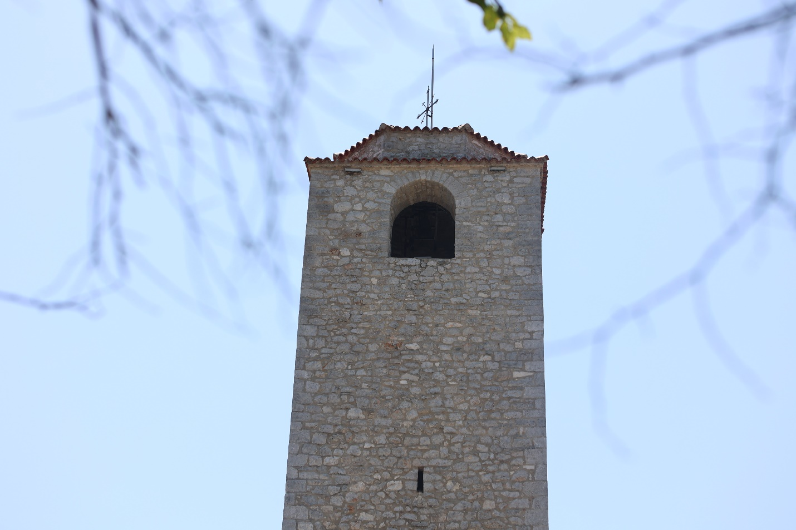
Sahat Kua u Podgorici
Za mnoge mlade Bošnjake porodica predstavlja prvo i najvažnije mjesto susreta sa identitetom. Kroz porodične priče, jezik, običaje, kulturne obrasce i sjećanja starijih generacija prenose se vrijednosti koje oblikuju osjećaj pripadnosti. Međutim, taj proces nije jednostavan niti uvijek isti. Mladi odrastaju u vremenu u kojem istovremeno imaju pristup različitim kulturama, idejama i životnim stilovima. Zbog toga se njihov identitet oblikuje kroz stalni dijalog između onoga što nasljeđuju i onoga što sami biraju.
Posebno važnu ulogu u razumijevanju pripadnosti ima jezik. Jezik nije samo sredstvo komunikacije, već i prostor u kojem se čuvaju kulturno pamćenje, porodične priče i osjećaj povezanosti sa zajednicom. Za mlade Bošnjake njegovanje jezika može biti važan način očuvanja kontinuiteta sa prethodnim generacijama. Istovremeno, savremeni komunikacijski prostor donosi nove oblike izražavanja i snažan uticaj globalnih kulturnih trendova, zbog čega odnos mladih prema jeziku postaje sve kompleksniji. Očuvanje jezičke i kulturne posebnosti zato ne treba posmatrati kao zatvaranje prema drugima, već kao mogućnost da se vlastiti identitet sačuva i razvija u otvorenom društvu.
Savremeno doba donijelo je i novu dimenziju pripadnosti – digitalni prostor. Mladi danas istovremeno pripadaju lokalnim zajednicama i globalnim mrežama. Njihova svakodnevica uključuje komunikaciju sa ljudima iz različitih država, praćenje sadržaja na različitim jezicima i upoznavanje sa vrijednostima koje često nisu direktno povezane sa sredinom u kojoj žive. Digitalne platforme mogu biti prostor afirmacije bošnjačke kulture i identiteta, ali i prostor u kojem se pripadnost preispituje, mijenja i dobija nove oblike.
Zbog toga pitanje pripadnosti ne treba svoditi na izbor između tradicije i modernosti. Mladi Bošnjaci mogu istovremeno njegovati svoje kulturno nasljeđe i biti otvoreni prema savremenim društvenim vrijednostima. Pripadnost određenoj zajednici ne znači odbacivanje drugih, niti očuvanje identiteta podrazumijeva izolaciju. Naprotiv, stabilan osjećaj vlastitog identiteta može biti osnova za kvalitetniji odnos prema različitostima i za aktivno učešće u multikulturalnom društvu.
Na osjećaj pripadnosti značajno utiču i obrazovanje, mogućnosti zapošljavanja i društvena perspektiva mladih. Kada mladi imaju mogućnost da se obrazuju, rade, razvijaju svoje sposobnosti i učestvuju u društvenom životu, veća je vjerovatnoća da će sredinu u kojoj žive doživljavati kao prostor u kojem mogu ostvariti svoje potencijale. Nasuprot tome, osjećaj ekonomske nesigurnosti, nedostatak perspektive i potreba za odlaskom mogu oslabiti vezu sa lokalnom zajednicom i otvoriti pitanje gdje mladi vide svoju budućnost.
Migracije i život u dijaspori dodatno mijenjaju način na koji se pripadnost doživljava. Mladi koji odlaze iz mjesta u kojima su odrasli često razvijaju višestruke osjećaje pripadnosti. Oni mogu biti snažno povezani sa porodicom i kulturnim nasljeđem iz kojeg potiču, a istovremeno usvajati iskustva i vrijednosti sredine u kojoj žive. Takva iskustva ne moraju predstavljati gubitak identiteta. Naprotiv, mogu otvoriti prostor za razvoj složenog i bogatog osjećaja pripadnosti koji povezuje više društvenih i kulturnih iskustava.
Važno je zato razumjeti da mladi Bošnjaci nisu jednaka i homogena generacija. Njihova iskustva razlikuju se u zavisnosti od mjesta u kojem žive, obrazovanja, porodičnog okruženja, ekonomskih mogućnosti, odnosa prema tradiciji i brojnih drugih faktora. Neki identitet doživljavaju kao snažan oslonac, drugi ga više preispituju, dok ga treći izražavaju kroz kulturu, jezik, umjetnost, društveni angažman ili porodične veze. Upravo ta različitost predstavlja važan dio savremene slike bošnjačke omladine.
Zato je potrebno stvarati prostor u kojem mladi mogu otvoreno govoriti o pripadnosti, bez nametanja unaprijed definisanih odgovora. Njihova iskustva treba istraživati, dokumentovati i uključivati u društvene procese. Kroz razgovore, istraživanja, digitalne ankete, kulturne projekte i različite oblike omladinskog angažmana moguće je bolje razumjeti šta za novu generaciju znači biti Bošnjak, šta im daje osjećaj povezanosti sa zajednicom i sa kojim se izazovima suočavaju u oblikovanju vlastite budućnosti.
Pitanje pripadnosti u savremenom dobu zato nije pitanje biranja između prošlosti i budućnosti. To je pitanje mogućnosti da se vlastiti identitet razvija, a da pritom ne izgubi vezu sa svojim korijenima. Mladi Bošnjaci imaju priliku da naslijeđene vrijednosti povežu sa novim znanjima, tehnologijama i iskustvima, stvarajući identitet koji je istovremeno svjestan svojih korijena i otvoren prema svijetu. U tom procesu pripadnost može postati ne samo osjećaj povezanosti sa zajednicom, već i osnova za samopouzdanje, društvenu odgovornost, međusobno razumijevanje i aktivno učešće u izgradnji budućnosti društva.
Objavljeno: 25.08.2026
JEZIK, KULTURA I IDENTITET: ŠTA MLADIM BOŠNJACIMA OSTAVLJAMO?
Jezik, kultura i identitet predstavljaju mnogo više od elemenata koji određuju pripadnost jednoj zajednici. Oni su prostor u kojem se čuvaju sjećanja, iskustva, vrijednosti i priče generacija koje su živjele prije nas. Kada govorimo o mladim Bošnjacima i budućnosti njihovog identiteta, važno je zato postaviti pitanje šta im danas ostavljamo i kakav će odnos prema tom nasljeđu oni imati u vremenu koje dolazi. Nasljeđe nije samo ono što se čuva u knjigama i arhivima, već i ono što se prenosi kroz svakodnevni govor, porodične običaje, kulturno stvaralaštvo, obrazovanje, umjetnost, vjeru, tradiciju i način na koji razumijemo vlastitu prošlost.
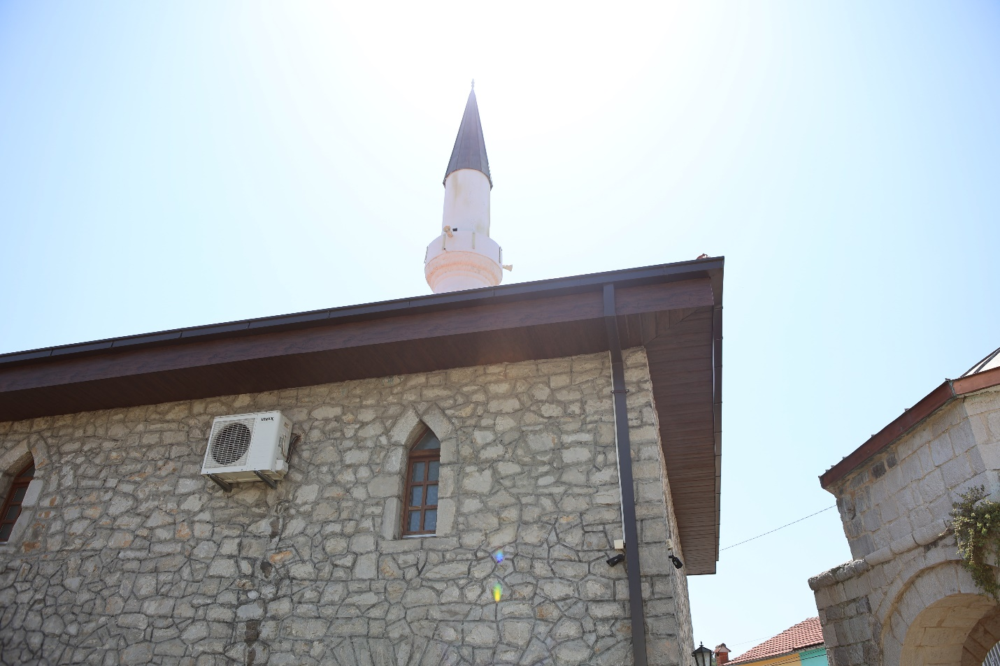
Osmanagića dzamija Podgorica
Jezik u tom procesu ima posebno mjesto. On je jedan od najvidljivijih oblika identiteta, ali istovremeno i živa kategorija koja se mijenja zajedno sa društvom. Za mlade Bošnjake jezik predstavlja vezu sa porodicom, kulturnim nasljeđem i prostorom iz kojeg potiču. Kroz jezik se prenose porodične priče, književnost, običaji i način razumijevanja svijeta. Međutim, savremeni način komunikacije donosi velike promjene. Digitalne platforme, društvene mreže, sadržaji na različitim jezicima i globalna kultura utiču na svakodnevni govor mladih. Zato očuvanje jezika ne znači zaustavljanje njegovog razvoja, već stvaranje uslova da on ostane živ, prisutan i relevantan u savremenom životu.
Posebna odgovornost postoji u obrazovanju. Škola može biti prostor u kojem mladi ne samo stiču znanje, već razvijaju svijest o kulturnoj raznolikosti i vlastitom nasljeđu. Poznavanje književnosti, historije, kulturnih stvaralaca i važnih događaja doprinosi razumijevanju identiteta, ali je jednako važno da se mladima omogući da o tim temama razgovaraju kritički i savremeno. Identitet koji se samo reprodukuje bez razumijevanja može postati formalnost, dok identitet koji se poznaje, preispituje i lično prihvata može postati snažan dio ličnog razvoja.
Kultura je još jedan važan prostor u kojem se identitet prenosi između generacija. Tradicionalna muzika, književnost, umjetnost, običaji, gastronomija, porodične prakse i različiti oblici kulturnog stvaralaštva predstavljaju bogatstvo koje ne treba posmatrati samo kao trag prošlosti. Za mlade Bošnjake kultura može biti prostor savremenog stvaralaštva i način da vlastito iskustvo predstave drugima. Upravo kroz nove umjetničke forme, film, muziku, fotografiju, književnost i digitalni sadržaj moguće je tradiciju približiti generaciji koja odrasta uz drugačije komunikacijske obrasce.
Važno je, međutim, razumjeti da očuvanje kulture ne podrazumijeva njeno zamrzavanje. Svaka generacija ima pravo da nasljeđe koje dobije od prethodnih generacija tumači na svoj način. Mladi Bošnjaci mogu čuvati ono što smatraju vrijednim, ali istovremeno stvarati nove kulturne izraze koji odgovaraju njihovom vremenu. Upravo u toj sposobnosti da se nasljeđe prenese, ali i razvija, nalazi se njegova održivost. Kultura koja nema prostor za mlade i njihove ideje teško može dugoročno ostati živa.
Pitanje „šta mladim Bošnjacima ostavljamo?“ zato nije samo pitanje šta smo sačuvali, već i kakve mogućnosti stvaramo da oni nastave taj proces. Ostavljamo li im dovoljno znanja o jeziku i kulturi? Postoje li prostori u kojima mogu učiti, stvarati i govoriti o svom identitetu? Imaju li priliku da svoje ideje predstave javnosti? Da li kulturne institucije, obrazovne ustanove i društvene organizacije dovoljno prepoznaju potrebe nove generacije? Ovo su pitanja koja zahtijevaju ozbiljan i otvoren razgovor.
Savremene tehnologije mogu biti značajan saveznik u očuvanju identiteta. Digitalizacija knjiga, arhivske građe, fotografija, usmenih svjedočenja i drugih oblika kulturnog nasljeđa omogućava da sadržaji koji su nekada bili dostupni samo u određenim institucijama postanu dostupni mnogo širem broju ljudi. Istovremeno, mladi mogu sami postati kreatori sadržaja koji govori o jeziku, kulturi i identitetu. Na taj način digitalni prostor ne mora biti samo mjesto uticaja globalnih trendova, već i prostor u kojem se vlastita kultura predstavlja, razvija i povezuje sa novim generacijama.
Posebno mjesto u ovom procesu imaju porodica i lokalna zajednica. Najvažnije vrijednosti često se prenose neformalno – kroz razgovore sa roditeljima i starijim članovima porodice, kroz priče o porijeklu, običajima, mjestima i ljudima koji su obilježili zajednicu. Kada se takva sjećanja ne prenesu, dio kulturnog pamćenja može nestati. Zato je važno dokumentovati iskustva starijih generacija i povezivati ih sa mladima. Usmena historija, porodične priče i lokalna sjećanja mogu biti dragocjeni izvori razumijevanja identiteta i važan dio kulturnog nasljeđa.
Istovremeno, mladi Bošnjaci žive u društvu različitosti i njihova budućnost ne može biti odvojena od šireg društvenog konteksta. Očuvanje vlastitog identiteta nije suprotno poštovanju drugih identiteta. Naprotiv, poznavanje vlastite kulture može biti osnova za kvalitetniji dijalog sa drugim zajednicama. Mladi koji razumiju svoje korijene mogu biti sigurniji u komunikaciji sa drugima, spremniji da uče iz različitosti i aktivnije učestvuju u izgradnji društva u kojem različiti identiteti imaju svoje mjesto.
Poseban izazov predstavljaju migracije i život mladih izvan mjesta iz kojeg potiču. Kada mladi odlaze zbog obrazovanja, zaposlenja ili boljih životnih prilika, pitanje očuvanja jezika i kulture dobija novu dimenziju. Veza sa zavičajem i zajednicom može biti oslabljena, ali savremene tehnologije omogućavaju nove načine povezivanja. Digitalne platforme, online obrazovanje, kulturni sadržaji i komunikacija sa porodicom mogu pomoći da se ta veza održi i u novim sredinama.
Ono što ostavljamo mladim Bošnjacima nije samo naslijeđe prošlosti. Ostavljamo im i odgovornost da to nasljeđe dalje razvijaju, ali i društvo u kojem treba da pronađu svoje mjesto. Zato ulaganje u jezik, kulturu i identitet mora biti povezano sa ulaganjem u obrazovanje, znanje, kreativnost i mogućnosti mladih. Nije dovoljno govoriti mladima da čuvaju ono što su dobili; potrebno im je omogućiti da od tog nasljeđa naprave nešto svoje.
Budućnost bošnjačkog identiteta neće zavisiti samo od toga koliko ćemo uspjeti sačuvati sadržaje iz prošlosti, već i od toga koliko ćemo mladima omogućiti da ih razumiju, koriste i nadograđuju. Jezik koji se govori, kultura koja se stvara i identitet koji se svjesno živi imaju mnogo veće šanse da opstanu od onih koji se samo formalno prenose. Zato je pitanje šta ostavljamo mladima istovremeno pitanje naše odgovornosti i njihove slobode – odgovornosti da sačuvamo vrijedno nasljeđe i slobode nove generacije da ga oblikuje u skladu sa vremenom u kojem živi.
Ako mladim Bošnjacima ostavimo znanje, kulturu koja je dostupna i živa, jezik koji se njeguje, historijsko pamćenje koje se razumije i prostor u kojem mogu slobodno stvarati, onda im ne ostavljamo samo prošlost. Ostavljamo im temelj na kojem mogu graditi budućnost.
Objavljeno: 27.08.2026
BOŠNJAČKI IDENTITET MLADIH IZMEĐU NASLJEĐA I NOVIH DRUŠTVENIH REALNOSTI
Bošnjački identitet mladih danas se oblikuje u prostoru između nasljeđa koje su dobili od prethodnih generacija i novih društvenih realnosti u kojima odrastaju. To je prostor u kojem se susreću porodica, jezik, kultura, tradicija, vjera, historijsko pamćenje i savremeni načini života, ali i obrazovanje, digitalne tehnologije, migracije, globalna kultura i nove društvene vrijednosti. Zbog toga identitet mladih Bošnjaka nije moguće posmatrati kao nepromjenjivu kategoriju, već kao proces koji se razvija kroz iskustvo, znanje, lični izbor i odnos prema zajednici i društvu u cjelini.
Halke na vratima Redzepagic akule u PLavu
Nasljeđe ima važnu ulogu u tom procesu. Porodične priče, jezik, običaji, kulturne vrijednosti, vjera i sjećanja na prošlost predstavljaju temelje na kojima mladi grade osjećaj pripadnosti. Međutim, savremena generacija odrasta u okolnostima koje se značajno razlikuju od onih u kojima su odrastali njihovi roditelji i djedovi. Mladi imaju pristup ogromnoj količini informacija, povezuju se sa ljudima iz različitih sredina i svakodnevno su izloženi različitim kulturnim uticajima. Njihov identitet zato nastaje kroz stalni susret između naslijeđenog i novog.
Posebno mjesto u tom procesu zauzima jezik. Za mlade Bošnjake jezik predstavlja važan dio kulturnog kontinuiteta i način očuvanja veze sa vlastitim nasljeđem. Istovremeno, savremena komunikacija mijenja način na koji mladi koriste jezik. Društvene mreže, digitalni sadržaji i globalna komunikacija stvaraju nove obrasce izražavanja. Izazov zato nije samo u očuvanju jezika, već u tome da se mladima omogući da ga koriste kao savremen, prirodan i živ oblik komunikacije, književnog i kulturnog stvaralaštva.
Kultura se takođe nalazi pred novim izazovima. Tradicija može imati stvarnu vrijednost samo ako je nova generacija razumije i prepoznaje kao dio vlastitog života. Mladi ne moraju birati između tradicionalnog i savremenog. Oni mogu istovremeno čuvati kulturno nasljeđe i stvarati nove oblike njegovog izražavanja kroz muziku, književnost, film, umjetnost, medije i digitalne platforme. Upravo takav pristup omogućava da kultura ne ostane samo uspomena na prošlost, već postane aktivan dio savremenog identiteta.
Nove društvene realnosti donose i izazove koji nisu direktno povezani sa identitetom, ali značajno utiču na način na koji ga mladi doživljavaju. Obrazovanje, zapošljavanje, ekonomska sigurnost, dostupnost društvenih sadržaja i mogućnost profesionalnog razvoja predstavljaju ključna pitanja budućnosti. Mladi koji imaju priliku da se obrazuju, rade i razvijaju svoje potencijale lakše grade osjećaj povezanosti sa sredinom u kojoj žive. Nasuprot tome, dugotrajna nesigurnost i nedostatak perspektive mogu uticati na odluku da budućnost potraže izvan svog mjesta ili države.
Migracije su zato jedan od važnih faktora koji mijenjaju savremeni odnos mladih prema pripadnosti. Odlazak u druge gradove i države ne mora značiti prekid veze sa vlastitim identitetom. Mladi mogu istovremeno biti dio novih sredina i ostati povezani sa svojim kulturnim porijeklom. Digitalna komunikacija danas omogućava da se održavaju kontakti sa porodicom, prijateljima i zajednicom, dok iskustva stečena u drugim društvima mogu postati vrijedan potencijal za budući razvoj.
Važan izazov predstavlja i pitanje vidljivosti mladih Bošnjaka u javnom i društvenom životu. Mladi žele da budu prepoznati ne samo kroz identitet kojem pripadaju, već i kroz svoje znanje, sposobnosti, profesionalne rezultate, kreativnost i društveni angažman. Njihovo aktivno učešće u obrazovnim, kulturnim, ekonomskim i društvenim procesima može doprinijeti ne samo afirmaciji bošnjačke zajednice, već i razvoju društva u cjelini. Zbog toga je potrebno stvarati više prostora za njihovo učešće i ozbiljno shvatiti njihove stavove i inicijative.
Posebno je važno izbjeći predstavljanje mladih Bošnjaka kao jedinstvene i homogene grupe. Njihova iskustva su različita i zavise od sredine u kojoj žive, porodičnog okruženja, obrazovanja, ekonomskih mogućnosti, odnosa prema tradiciji i brojnih drugih okolnosti. Neki će snažnije njegovati tradicionalne obrasce, drugi će identitet izražavati kroz savremenu kulturu i digitalni prostor, dok će treći kombinovati različita iskustva. Upravo ta raznolikost predstavlja jednu od karakteristika savremene generacije.
U tom kontekstu, očuvanje identiteta ne treba razumjeti kao zatvaranje prema društvu i drugim kulturama. Naprotiv, snažan osjećaj pripadnosti može biti osnova za otvorenost, toleranciju i kvalitetan dijalog. Mladi koji poznaju vlastito kulturno nasljeđe mogu lakše razumjeti i poštovati različitosti koje ih okružuju. Bošnjački identitet može biti prostor povezivanja sa vlastitom zajednicom, ali istovremeno i osnova za aktivno i odgovorno učešće u multikulturalnom društvu.
Savremene društvene realnosti zato zahtijevaju novi način razgovora o identitetu. Umjesto da se mladima samo govori šta treba da čuvaju, potrebno je slušati kako oni sami razumiju svoju pripadnost, šta im je važno i sa kojim se problemima suočavaju. Njihova iskustva treba istraživati i dokumentovati kroz razgovore, ankete, digitalne platforme, kulturne projekte i druge savremene oblike komunikacije. Samo tako moguće je dobiti realniju sliku o potrebama, stavovima i potencijalima nove generacije.
Bošnjački identitet mladih zato nije samo pitanje prošlosti. On je i pitanje budućnosti. Način na koji će mladi razumjeti svoje nasljeđe, kako će ga povezati sa savremenim vrijednostima i koliko će biti uključeni u društvene procese odrediće i način na koji će se identitet razvijati u narednim decenijama. Između korijena i novih društvenih realnosti ne mora postojati sukob. Naprotiv, upravo povezivanje iskustva prošlih generacija sa znanjem, kreativnošću i energijom mladih može otvoriti prostor za snažniji, savremeniji i odgovorniji odnos prema identitetu.
Objavljeno: 29.08.2026
MLADI BOŠNJACI PRED IZAZOVIMA SAVREMENOG DRUŠTVA
Mladi Bošnjaci danas se suočavaju sa izazovima koji su istovremeno univerzalni i povezani sa specifičnostima njihovog društvenog i kulturnog položaja. Kao i druge mlade generacije, oni traže kvalitetno obrazovanje, sigurnije zaposlenje, mogućnost profesionalnog napredovanja, ekonomsko osamostaljivanje i kvalitet života. Istovremeno, suočavaju se sa pitanjima identiteta, očuvanja jezika i kulture, pripadnosti zajednici, migracija i potrebe da budu ravnopravno uključeni u društvene procese. Zbog toga položaj mladih treba posmatrati sveobuhvatno, kroz njihove potrebe, ali i kroz potencijale koje posjeduju.
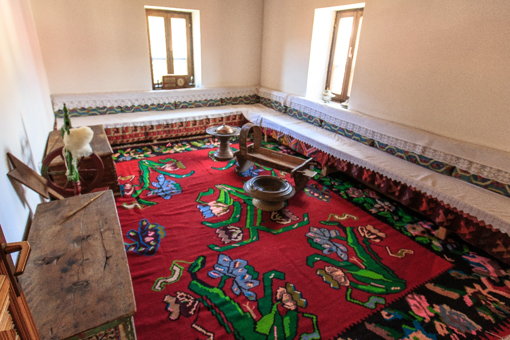
Musafirska soba Rožaje, foto Ganica kula
Jedan od najvećih izazova savremenog društva jeste stvaranje perspektive za mlade. Obrazovanje samo po sebi nije dovoljno ako nakon završetka školovanja ne postoje odgovarajuće mogućnosti za zapošljavanje i profesionalni razvoj. Mladi žele da njihovo znanje i trud imaju vrijednost u društvu u kojem žive. Kada takve mogućnosti izostanu, odlazak postaje jedna od realnih opcija. Problem migracija zato nije samo pitanje demografije, već i pitanje stvaranja društva u kojem mladi mogu vidjeti svoju budućnost.
Pored ekonomskih pitanja, važan je i osjećaj društvene uključenosti. Mladi žele da učestvuju u donošenju odluka koje utiču na njihov život, da pokreću inicijative i da budu prepoznati kao ravnopravni akteri. Njihovo učešće u lokalnoj zajednici, kulturi, obrazovanju, civilnom društvu i javnom životu može doprinijeti stvaranju društva koje bolje razumije potrebe nove generacije. Istovremeno, aktivno građanstvo mladih može biti važan pokretač pozitivnih promjena.
Digitalno doba otvorilo je nove mogućnosti, ali i nove probleme. Mladi imaju više mogućnosti za informisanje, povezivanje i izražavanje nego ikada ranije. Digitalni prostor može biti mjesto obrazovanja, kulturne promocije, profesionalnog umrežavanja i društvenog angažmana. Međutim, on može biti i prostor dezinformacija, stereotipa, polarizacije i površnog odnosa prema važnim društvenim pitanjima. Zbog toga je razvoj digitalne i medijske pismenosti jedan od važnih preduslova za odgovorno učešće mladih u savremenom društvu.
Za mlade Bošnjake digitalni prostor može imati i posebnu vrijednost u očuvanju i promociji kulturnog identiteta. Kroz savremene tehnologije moguće je približiti mladima književnost, historiju, jezik, umjetnost i tradiciju, ali i omogućiti da sami stvaraju sadržaje kojima predstavljaju svoje iskustvo. Na taj način mladi prestaju biti samo korisnici kulturnog nasljeđa i postaju njegovi aktivni kreatori.
Savremeno društvo od mladih zahtijeva sposobnost prilagođavanja, ali prilagođavanje ne bi trebalo značiti odricanje od vlastitog identiteta. Mladi Bošnjaci mogu biti obrazovani, moderni, digitalno povezani i otvoreni prema svijetu, a istovremeno njegovati svoje kulturno nasljeđe. Upravo ravnoteža između pripadnosti i otvorenosti može predstavljati jednu od važnih vrijednosti nove generacije.
Zato izazove mladih ne treba posmatrati samo kao probleme koje treba riješiti, već i kao priliku da se prepoznaju njihova energija, znanje i kreativnost. Mladi Bošnjaci predstavljaju značajan potencijal za razvoj zajednice i društva. Njihove ideje, obrazovanje, iskustva i spremnost na promjene mogu biti pokretač novih kulturnih, obrazovnih, ekonomskih i društvenih inicijativa.
Budućnost zavisi od toga koliko ćemo biti spremni da mlade saslušamo i uključimo. Potrebno je razumjeti njihove stvarne potrebe, ali i omogućiti im da učestvuju u kreiranju rješenja. Istraživanje njihovih stavova, iskustava i očekivanja može biti važan korak ka kreiranju politika i programa koji odgovaraju stvarnom životu nove generacije.
Mladi Bošnjaci pred izazovima savremenog društva nisu samo grupa kojoj je potrebna podrška. Oni su generacija koja već danas ima znanje, ideje i kapacitet da doprinese promjenama. Njihova budućnost treba da bude pitanje cijelog društva, jer ulaganje u obrazovanje, kulturu, zapošljavanje, društvenu uključenost i očuvanje identiteta mladih istovremeno znači ulaganje u stabilniju, otvoreniju i perspektivniju budućnost zajednice.
Objavljeno: 30.08.2026
IDENTITET, OBRAZOVANJE I PERSPEKTIVE: GDJE SU MLADI BOŠNJACI DANAS?
Mladi Bošnjaci danas odrastaju i grade svoju budućnost u društvu koje se brzo mijenja. Njihov položaj određuju brojni faktori – obrazovanje, mogućnosti zapošljavanja, ekonomska sigurnost, društvena uključenost, kulturno nasljeđe, identitet, digitalizacija i migracije. Istovremeno, riječ je o generaciji koja ima pristup većem broju informacija, znanja i mogućnosti nego ikada ranije, ali koja se suočava i sa novim oblicima nesigurnosti i pritiscima koji utiču na odluke o tome gdje i kako želi da živi.
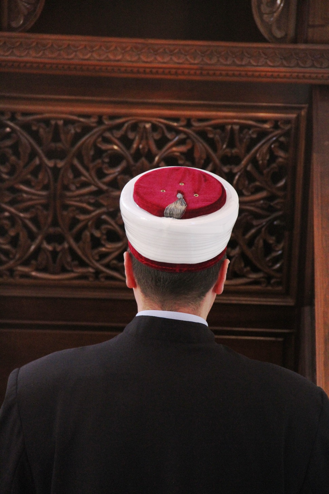
Identitet mladih Bošnjaka danas ne može se posmatrati odvojeno od šireg društvenog konteksta. Porodica, jezik, kultura, tradicija, vjera i historijsko pamćenje i dalje imaju važnu ulogu u oblikovanju osjećaja pripadnosti, ali način na koji mladi doživljavaju te vrijednosti nije isti kao kod prethodnih generacija. Savremeni život donosi nove oblike komunikacije, drugačije profesionalne mogućnosti i snažan uticaj globalne kulture. Mladi zato svoj identitet oblikuju kroz spoj naslijeđenih vrijednosti i ličnih iskustava, što ga čini dinamičnim i promjenjivim.
Obrazovanje predstavlja jedan od ključnih elemenata njihove budućnosti. Znanje i stručnost mladima otvaraju mogućnosti za profesionalni razvoj, ekonomsku samostalnost i aktivnije učešće u društvu. Međutim, obrazovanje dobija punu vrijednost tek kada je povezano sa mogućnošću zapošljavanja i stvaranja kvalitetnog života. Ako nakon školovanja ne postoje dovoljno razvijene prilike za rad i napredovanje, mladi se prirodno okreću drugim sredinama. Zato pitanje obrazovanja treba posmatrati zajedno sa pitanjem ekonomskog razvoja, tržišta rada i ukupnih društvenih perspektiva.
Za mlade Bošnjake važno je i pitanje dostupnosti obrazovnih i kulturnih sadržaja koji doprinose poznavanju vlastitog jezika, kulture i historije. Očuvanje identiteta ne treba biti suprotstavljeno savremenom obrazovanju i otvorenosti prema svijetu. Naprotiv, kvalitetno obrazovanje može mladima pomoći da bolje razumiju vlastito nasljeđe, ali i da razviju sposobnost kritičkog mišljenja i komunikacije sa drugim kulturama i zajednicama.
Digitalizacija je dodatno promijenila položaj mladih. Internet i društvene mreže postali su prostor obrazovanja, komunikacije, informisanja i profesionalnog povezivanja. Istovremeno, digitalni prostor omogućava mladima da promovišu kulturno nasljeđe i stvaraju nove sadržaje koji govore o njihovom identitetu. Za bošnjačku omladinu to predstavlja značajnu priliku da jezik, književnost, umjetnost, tradiciju i savremeno stvaralaštvo približi široj publici.
Međutim, jedan od najozbiljnijih izazova ostaje odlazak mladih. Razlozi za migracije često su povezani sa željom za boljim obrazovanjem, sigurnijim zaposlenjem, većim prihodima i kvalitetnijim životom. Odlazak nije samo individualna odluka, već pojava koja dugoročno utiče na demografsku, ekonomsku i društvenu strukturu zajednice. Zbog toga je potrebno stvarati uslove u kojima mladi mogu da biraju gdje će živjeti na osnovu svojih želja, a ne zato što su primorani da odlaze zbog nedostatka perspektive.
Gdje su mladi Bošnjaci danas? Oni su istovremeno u školama i na fakultetima, na tržištu rada, u lokalnim zajednicama, kulturnim organizacijama, digitalnom prostoru, ali i izvan granica države. Njihova iskustva su različita, kao i njihovi planovi. Neki svoju budućnost vide u Crnoj Gori, drugi je grade u inostranstvu, dok mnogi pokušavaju da povežu iskustva iz više sredina. Ono što je zajedničko jeste potreba za sigurnošću, mogućnošću razvoja i prostorom u kojem mogu ostvariti svoje potencijale.
Zato je važno da mlade ne posmatramo samo kroz probleme, već i kroz njihove sposobnosti i potencijale. Njihovo znanje, kreativnost, digitalne vještine i spremnost na promjene predstavljaju važan resurs za budućnost. Ako im društvo pruži dovoljno prostora za obrazovanje, rad, kulturno stvaralaštvo i učešće u donošenju odluka, mladi mogu postati jedan od najvažnijih pokretača pozitivnih promjena.
Razumjeti gdje su mladi Bošnjaci danas znači razumjeti i gdje žele biti sjutra. Njihovi stavovi, potrebe i očekivanja treba da budu dio ozbiljnih istraživanja i javnih politika. Samo slušanjem njihove generacije moguće je izgraditi realnu sliku o izazovima sa kojima se suočavaju i mogućnostima koje im treba ponuditi. Budućnost se ne može planirati bez mladih, jer upravo oni predstavljaju generaciju koja će naslijeđene vrijednosti, društvene institucije i kulturno nasljeđe prenijeti u novo vrijeme.
Objavljeno: 31.08.2026
MLADI BOŠNJACI IZMEĐU ODLASKA I OSTANKA: IZAZOVI I PERSPEKTIVE
Pitanje odlaska i ostanka jedno je od najvažnijih pitanja koje se danas postavlja pred mlade. Za mlade Bošnjake ono ima dodatnu težinu jer odluka o odlasku često istovremeno znači promjenu životne sredine, udaljavanje od porodice i zajednice, ali i suočavanje sa pitanjem kako sačuvati vezu sa vlastitim kulturnim i identitetskim nasljeđem. Odlazak zato nije samo geografsko pomjeranje, već proces koji mijenja način na koji mladi posmatraju sebe, svoje mogućnosti i svoju budućnost.
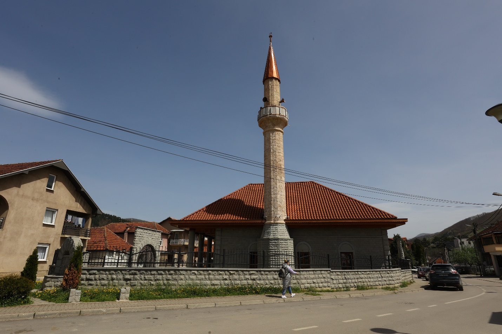
Bijelo Polje, dzamija u gradu
Mladi najčešće odlaze zbog obrazovanja, zaposlenja i želje za boljim životnim uslovima. Savremeni svijet omogućio je veću mobilnost, pa mladi danas lakše mogu studirati, raditi i živjeti u drugim državama. Međutim, problem nastaje kada odlazak prestane biti izbor i postane jedina realna mogućnost. Kada mladi ne vide dovoljno prostora za profesionalni i lični razvoj u sredini u kojoj su odrasli, odlazak postaje način da ostvare ono što kod kuće ne mogu.
Ova pojava ima posljedice i za zajednicu. Odlaskom mladih gubi se dio obrazovanog, kreativnog i radno sposobnog stanovništva. Smanjuje se potencijal za razvoj lokalne zajednice, kulturnih aktivnosti i novih inicijativa. Posebno je važno pitanje dugoročnog povezivanja mladih koji odu sa sredinom iz koje potiču. Savremene tehnologije omogućavaju da fizička udaljenost ne mora značiti i prekid društvenih i kulturnih veza.
Mladi koji žive u inostranstvu mogu ostati povezani sa svojim jezikom, kulturom i zajednicom. Istovremeno, iskustva koja stiču u drugim društvima mogu biti vrijedna za sredinu iz koje potiču. Oni donose nova znanja, profesionalna iskustva, drugačije modele organizovanja i nove poglede na društvene procese. Zato dijasporu mladih ne treba posmatrati samo kroz prizmu odlaska, već i kroz mogućnost stvaranja novih oblika saradnje i povezivanja.
Sa druge strane, ostanak zahtijeva stvaranje uslova u kojima mladi mogu planirati život sa osjećajem sigurnosti. Potrebno je ulagati u obrazovanje, tržište rada, podršku mladim preduzetnicima, kulturne i društvene programe, kao i u stvaranje prostora za aktivno učešće mladih. Mladi neće ostajati samo zato što se od njih očekuje da ostanu; potrebno je da imaju konkretne razloge da svoju budućnost vide u sredini u kojoj žive.
Posebno je važno da mladi budu uključeni u procese odlučivanja. Oni najbolje poznaju probleme sa kojima se njihova generacija suočava i mogu ponuditi rješenja koja odgovaraju savremenim okolnostima. Njihovo učešće u lokalnim inicijativama, omladinskim organizacijama, kulturnim projektima, obrazovnim programima i javnom životu može doprinijeti stvaranju društva koje bolje razumije potrebe nove generacije.
Odlazak i ostanak zato ne treba predstavljati kao dvije suprotstavljene kategorije. Savremeni mladi mogu biti povezani sa više mjesta istovremeno. Mogu studirati ili raditi u drugoj državi, a ostati povezani sa porodicom i zajednicom. Mogu steći iskustvo u inostranstvu i kasnije ga prenijeti u svoju sredinu. Mogu biti dio globalnog društva, a istovremeno njegovati vlastiti identitet. Takva višestruka pripadnost postaje sve karakterističnija za savremene generacije.
Najvažnije pitanje nije samo koliko mladih odlazi, već i zbog čega odlaze i kakve mogućnosti imaju nakon odlaska. Jednako važno je razumjeti zbog čega neki odlučuju da ostanu i šta im omogućava da u svojoj sredini grade život. Odgovori na ova pitanja zahtijevaju istraživanje, razgovor sa mladima i ozbiljno planiranje razvojnih politika.
Budućnost bošnjačke zajednice u velikoj mjeri zavisi od toga hoće li mladi imati mogućnost da biraju. Izbor između odlaska i ostanka treba da bude pitanje lične odluke, a ne posljedica nedostatka prilika. Stvaranjem boljih obrazovnih, ekonomskih i društvenih uslova može se omogućiti da mladi ostanu povezani sa zajednicom čak i kada dio njih svoju profesionalnu budućnost gradi izvan zemlje. U konačnom, cilj nije spriječiti mobilnost mladih, već izgraditi društvo koje sa njima ostaje povezano i koje zna prepoznati vrijednost njihovog znanja, iskustva i potencijala.
Objavljeno: 02.09.2026
BUDUĆNOST BOŠNJAKA KROZ PERSPEKTIVU MLADIH GENERACIJA
Budućnost svake zajednice u velikoj mjeri zavisi od toga kakve mogućnosti pruža svojim mladim generacijama. Kada govorimo o budućnosti Bošnjaka, ne možemo je posmatrati bez razumijevanja potreba, stavova i očekivanja mladih. Oni će u narednim decenijama biti nosioci kulturnog, obrazovnog, ekonomskog i društvenog života, ali njihova uloga počinje već danas. Zato pitanje budućnosti nije samo pitanje očuvanja onoga što je naslijeđeno, već i pitanje stvaranja uslova u kojima mladi mogu razvijati nove ideje i vrijednosti.
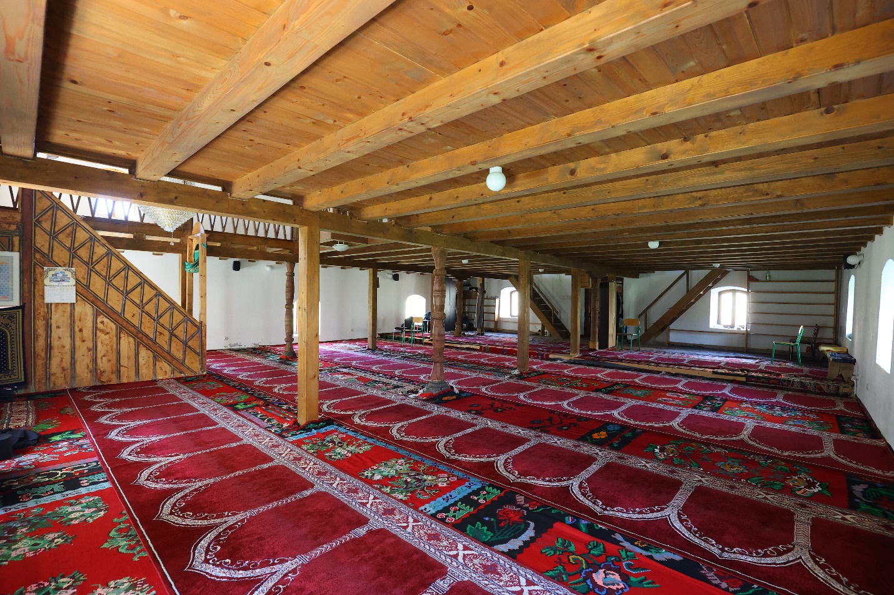
Unutrasnjost Petnjičke džamije
Mladi Bošnjaci nasljeđuju bogato kulturno i historijsko iskustvo koje uključuje jezik, tradiciju, kulturu, vjeru, književnost, umjetnost i kolektivno pamćenje. Međutim, nasljeđe samo po sebi nije dovoljno. Svaka nova generacija mora pronaći način da ga razumije i prilagodi vremenu u kojem živi. Ako se kultura i identitet mladima predstavljaju samo kao obaveza, postoji opasnost da izgube svoju privlačnost. Ako se, međutim, predstave kao prostor znanja, kreativnosti i ličnog izražavanja, mogu postati važan dio savremenog života.
Obrazovanje će imati ključnu ulogu u tom procesu. Obrazovani mladi predstavljaju osnovu društvenog razvoja i jedan od najvažnijih potencijala svake zajednice. Potrebno je podržavati njihovo školovanje, profesionalno usavršavanje, razvoj digitalnih i preduzetničkih vještina, ali i njihovo povezivanje sa kulturnim i društvenim nasljeđem. Znanje i identitet ne treba posmatrati kao dvije odvojene oblasti. Naprotiv, mlada osoba koja poznaje svoje korijene i istovremeno posjeduje savremena znanja može biti snažan pokretač razvoja.
Budućnost zavisi i od ekonomskih mogućnosti. Bez kvalitetnih radnih mjesta, profesionalnog razvoja i mogućnosti ekonomskog osamostaljivanja teško je očekivati da će mladi dugoročno ostajati u svojim sredinama. Zato pitanje mladih mora biti povezano sa širim razvojnim politikama. Podrška obrazovanju, zapošljavanju, inovacijama, preduzetništvu i kreativnim industrijama može stvoriti nove mogućnosti i smanjiti osjećaj da je odlazak jedini put ka boljoj budućnosti.
Jednako važna je i društvena participacija. Mladi ne treba da budu samo korisnici programa i politika koje se donose u njihovo ime. Oni treba da učestvuju u njihovom kreiranju. Njihove ideje, iskustva i prijedlozi mogu pomoći da se bolje razumiju problemi nove generacije. Veće učešće mladih u javnom, kulturnom i društvenom životu doprinosi njihovom osjećaju pripadnosti i odgovornosti prema zajednici.
Digitalna generacija donosi i potpuno nove mogućnosti za očuvanje i razvoj identiteta. Mladi mogu koristiti savremene tehnologije za dokumentovanje kulturnog nasljeđa, promociju jezika i umjetnosti, povezivanje zajednice i stvaranje novih oblika kulturnog sadržaja. Na taj način identitet može dobiti novu vidljivost i postati dio savremenog digitalnog prostora, umjesto da ostane ograničen na tradicionalne načine prenosa.
Budućnost Bošnjaka treba zato graditi na povezivanju generacija. Starije generacije posjeduju iskustvo i sjećanje, dok mladi donose novu energiju, znanje i drugačije načine komunikacije. Kada se te dvije vrijednosti povežu, otvara se prostor za kvalitetan prenos kulturnog nasljeđa i stvaranje novih ideja. Prekid između generacija može oslabiti kontinuitet, dok dijalog među njima može stvoriti snažniju osnovu za budućnost.
Važno je pritom prihvatiti činjenicu da će dio mladih svoju budućnost graditi izvan mjesta u kojem su rođeni. Migracije su dio savremenog svijeta i ne mogu se posmatrati samo kao gubitak. Ključno je razvijati načine da mladi koji žive u drugim državama ostanu povezani sa svojim kulturnim prostorom i da njihovo znanje i iskustvo budu potencijal za zajednicu. Savremena tehnologija pruža mogućnost da se veze održavaju bez obzira na fizičku udaljenost.
Budućnost Bošnjaka kroz perspektivu mladih generacija zato treba biti otvorena, obrazovana, kulturno svjesna i društveno odgovorna. To je budućnost u kojoj identitet nije prepreka modernosti, već osnova samopouzdanja i pripadnosti; u kojoj obrazovanje otvara mogućnosti; u kojoj mladi imaju pravo da učestvuju u odlukama koje ih se tiču; i u kojoj odlazak ne mora značiti prekid veze sa zajednicom.
Najvažnije je da se budućnost ne planira bez onih kojima pripada. Glas mladih treba da bude prisutan u istraživanjima, kulturnim projektima, obrazovnim programima, javnim politikama i svim procesima koji određuju razvoj zajednice. Ako želimo razumjeti budućnost Bošnjaka, moramo razumjeti kako je vide mladi, šta ih motiviše, šta ih zabrinjava, gdje žele da žive i kakvo društvo žele da grade. Budućnost jedne zajednice ne čuva se samo sjećanjem na prošlost. Ona se čuva znanjem, obrazovanjem, kulturom, odgovornošću i sposobnošću da se novim generacijama pruži prostor da stvaraju. Upravo zato mladi Bošnjaci nisu samo budući nosioci identiteta i zajednice – oni su njeni sadašnji akteri i jedan od najvažnijih potencijala njenog budućeg razvoja.
Objavljeno: 04.09.2026
MLADI BOŠNJACI KAO ČUVARI IDENTITETA I NOSIOCI BUDUĆNOSTI
Mladi Bošnjaci predstavljaju jednu od najvažnijih karika između kulturnog nasljeđa prethodnih generacija i budućnosti koja se tek oblikuje. Njihova uloga nije samo u tome da sačuvaju ono što su naslijedili, već i da tom nasljeđu daju novi smisao i prilagode ga savremenom vremenu. Identitet se ne prenosi automatski sa jedne generacije na drugu. On se uči, razumije, preispituje i svakodnevno živi kroz jezik, kulturu, porodične vrijednosti, vjeru, tradiciju, obrazovanje i odnos prema zajednici.
U vremenu globalizacije i ubrzanih društvenih promjena, mladi imaju pristup različitim kulturama, idejama i načinima života. Takvo okruženje može predstavljati izazov za očuvanje identiteta, ali istovremeno pruža i velike mogućnosti. Mladi Bošnjaci danas mogu vlastitu kulturu predstavljati kroz savremenu umjetnost, digitalne medije, književnost, muziku, obrazovanje i različite društvene inicijative. Na taj način identitet prestaje biti samo naslijeđe prošlosti i postaje aktivan dio savremenog života.
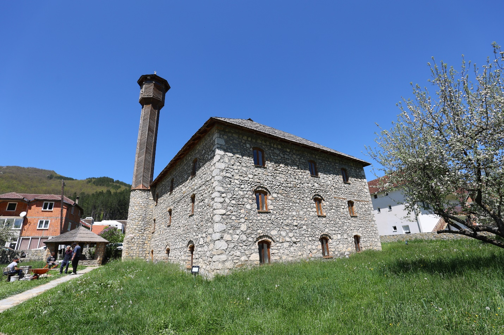
Petnjička džamija
Posebno važnu ulogu u očuvanju identiteta imaju jezik i kultura. Jezik povezuje generacije i čuva način na koji zajednica pamti i tumači vlastito iskustvo. Kultura, kroz običaje, umjetnost, književnost, muziku i tradiciju, predstavlja prostor u kojem se to iskustvo prenosi. Međutim, očuvanje ne znači zaustavljanje razvoja. Svaka generacija ima pravo da naslijeđe izražava na svoj način. Mladi mogu čuvati tradiciju, ali istovremeno stvarati nove kulturne sadržaje koji odgovaraju njihovom vremenu i iskustvu.
Mladi su istovremeno i nosioci budućnosti jer će njihovo obrazovanje, profesionalne sposobnosti, društveni angažman i vrijednosti oblikovati zajednicu u narednim decenijama. Zbog toga je ulaganje u mlade mnogo šire od pružanja obrazovne ili finansijske podrške. Potrebno je stvarati mogućnosti za njihovo zapošljavanje, profesionalni razvoj, kreativnost i učešće u javnom životu. Mladi koji imaju priliku da razvijaju svoje potencijale mogu biti pokretači pozitivnih promjena u svojim zajednicama.
Važno je i da mladi imaju mogućnost da govore o svom identitetu vlastitim glasom. Neophodno je čuti njihova iskustva, potrebe i stavove, umjesto da se o njima govori bez njihovog učešća. Kroz istraživanja, ankete, razgovore, kulturne projekte i digitalne platforme moguće je bolje razumjeti kako nova generacija doživljava pripadnost i šta očekuje od budućnosti.
Očuvanje identiteta ne podrazumijeva zatvaranje prema drugim zajednicama. Naprotiv, mladi koji poznaju i cijene vlastito nasljeđe mogu biti otvoreniji prema različitostima i spremniji da učestvuju u izgradnji društva zasnovanog na ravnopravnosti i međusobnom poštovanju. Bošnjački identitet može biti snažan oslonac ličnog i kolektivnog razvoja, ali istovremeno i osnova za dijalog sa drugima.
Zato su mladi Bošnjaci i čuvari identiteta i nosioci budućnosti. Od njih se ne očekuje samo da sačuvaju ono što su dobili, već da nastave da stvaraju. Njihova generacija ima priliku da poveže vrijednosti prošlosti sa znanjem, tehnologijama i idejama savremenog svijeta. U toj sposobnosti povezivanja nalazi se jedan od najvažnijih potencijala za budućnost bošnjačke zajednice.
Objavljeno: 05.09.2026
OD TRADICIJE DO SAVREMENOSTI: IDENTITET MLADIH BOŠNJAKA
Identitet mladih Bošnjaka danas nastaje na prostoru između tradicije koju nasljeđuju i savremenosti u kojoj žive. To nije jednostavan odnos između prošlosti i sadašnjosti, već proces u kojem se stare vrijednosti susreću sa novim načinima života, komunikacije i razmišljanja. Mladi ne odrastaju u istom društvenom okruženju kao njihove prethodne generacije i zato njihov odnos prema identitetu prirodno dobija nove oblike.
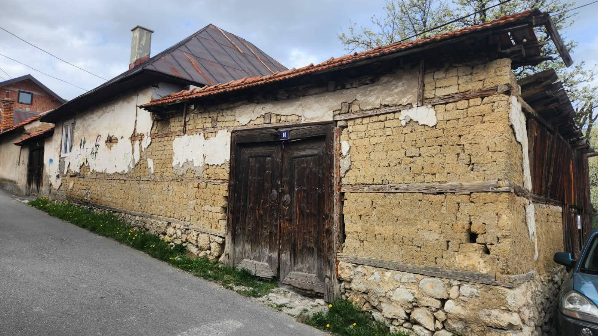
Stara kuća u Pljevljima
Tradicija ima važnu ulogu u očuvanju kontinuiteta. Porodični običaji, jezik, kultura, vjera, književnost, muzika i sjećanja na prethodne generacije predstavljaju temelje kroz koje mladi upoznaju svoje porijeklo. Međutim, vrijednost tradicije ne nalazi se samo u njenom ponavljanju. Ona dobija puni smisao kada je nova generacija razumije i kada u njoj prepoznaje vrijednosti koje može povezati sa vlastitim životom.
Savremenost donosi drugačije izazove. Digitalne tehnologije promijenile su način na koji mladi komuniciraju, uče, rade i stvaraju društvene veze. Društvene mreže omogućavaju da kulturni sadržaji budu dostupni širokom broju ljudi, ali istovremeno povećavaju uticaj globalnih trendova. Mladi se svakodnevno susreću sa različitim kulturnim obrascima i vrijednostima, zbog čega se njihov identitet razvija kroz mnogo širi prostor nego ranije.
U takvom okruženju nije potrebno birati između tradicije i savremenosti. Moguće je biti moderan i istovremeno njegovati vlastiti identitet. Mladi Bošnjaci mogu koristiti savremene tehnologije za promociju vlastite kulture, stvarati nove umjetničke sadržaje, istraživati historiju i koristiti digitalne platforme za povezivanje sa drugim mladima. Tradicija tako dobija novi prostor za život, a savremenost postaje sredstvo njenog razvoja.
Posebno je važno da se kulturno nasljeđe približi mladima na način koji odgovara njihovim interesovanjima i načinu komunikacije. Knjige, arhivska građa i tradicionalni kulturni sadržaji imaju veliku vrijednost, ali ih treba dopuniti savremenim formatima. Video sadržaji, podcasti, digitalne izložbe, interaktivne mape, društvene mreže i drugi oblici digitalnog pripovijedanja mogu otvoriti nove mogućnosti za upoznavanje mladih sa vlastitim nasljeđem.
Odnos prema tradiciji treba istovremeno biti otvoren i kritičan. Poznavati prošlost ne znači nekritički prihvatati sve obrasce iz prošlih vremena. Mladi imaju pravo da preispituju, biraju i stvaraju. Upravo kroz takav odnos identitet može ostati živ. Kultura koja se razvija zajedno sa svojim mladim generacijama ima veće šanse da bude prisutna i u budućnosti.
Prelazak od tradicije do savremenosti zato ne znači napuštanje korijena. To je proces u kojem se nasljeđe prenosi u nove okolnosti. Mladi Bošnjaci mogu biti generacija koja će spojiti iskustvo prethodnih generacija sa savremenim znanjem, tehnologijom i kreativnošću. Takav spoj može omogućiti da identitet bude istovremeno stabilan u svojim osnovnim vrijednostima i otvoren za promjene koje donosi budućnost.
Objavljeno: 06.09.2026
MLADI BOŠNJACI I BUDUĆNOST BOŠNJAČKOG IDENTITETA
Budućnost bošnjačkog identiteta u velikoj mjeri zavisi od toga kako će ga razumjeti i oblikovati mlade generacije. Identitet koji se prenosi sa generacije na generaciju ne može ostati nepromijenjen, jer se mijenja društvo u kojem ljudi žive. Zato je važno razumjeti šta mladim Bošnjacima danas znači pripadnost, koje vrijednosti smatraju važnim i na koji način žele da očuvaju vezu sa svojim kulturnim i historijskim nasljeđem.
Za mnoge mlade identitet počinje u porodici. Kroz porodične priče, jezik, običaje, vjeru i odnos prema kulturnom nasljeđu stvaraju se prvi osjećaji pripadnosti. Kasnije se taj identitet oblikuje kroz obrazovanje, prijateljstva, profesionalno iskustvo, putovanja i susrete sa drugim kulturama. Mladi tako ne nasljeđuju samo gotov identitet, već ga kroz životno iskustvo dalje razvijaju.
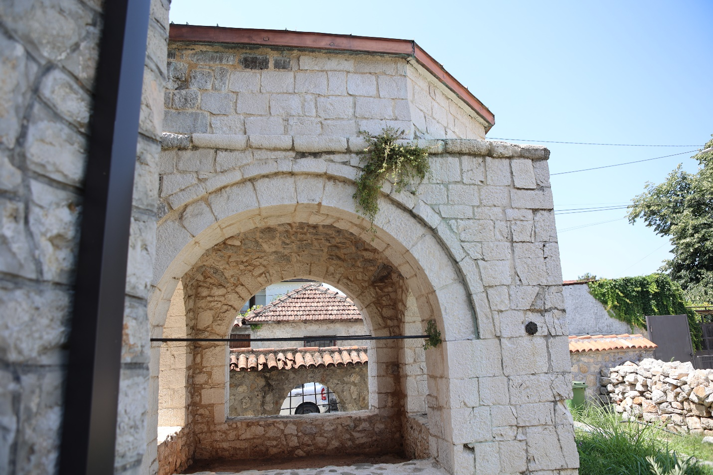
Turbe u Osmanagića haremu
Jedan od ključnih izazova budućnosti jeste očuvanje jezika i kulturnog kontinuiteta. Ako mladi izgube vezu sa jezikom, književnošću, kulturom i historijskim pamćenjem, slabi i veza sa dijelom nasljeđa koje određuje identitet zajednice. Zato je važno stvarati sadržaje i programe koji mladima omogućavaju da upoznaju vlastitu kulturu na savremen i njima blizak način.
Digitalni prostor u tom smislu predstavlja ogromnu priliku. Mladi mogu biti ne samo konzumenti već i kreatori sadržaja o bošnjačkoj kulturi i identitetu. Internet omogućava povezivanje mladih iz različitih gradova i država, uključujući i dijasporu. Digitalne platforme mogu pomoći u dokumentovanju kulturnog nasljeđa, promociji umjetnosti, književnosti i jezika, ali i u stvaranju novih oblika zajedništva.
Budućnost identiteta povezana je i sa društvenim položajem mladih. Teško je govoriti o dugoročnom očuvanju zajednice ako mladi nemaju dovoljno mogućnosti za obrazovanje, zaposlenje, profesionalni razvoj i ekonomsko osamostaljivanje. Zbog toga kulturne teme treba povezivati sa širim pitanjima kvaliteta života. Mladi žele da pripadaju zajednici, ali istovremeno žele mogućnost da u njoj grade uspješnu i dostojanstvenu budućnost.
Posebnu pažnju zahtijeva pitanje odlaska mladih. Migracije mogu oslabiti neposrednu vezu sa lokalnom zajednicom, ali ne moraju značiti gubitak identiteta. Mladi koji žive izvan svoje zemlje mogu ostati povezani sa jezikom, porodicom i kulturnim nasljeđem. Njihova iskustva iz drugih društava mogu biti dodatna vrijednost, posebno ako se razviju kvalitetni načini komunikacije i saradnje sa zajednicom iz koje potiču.
Budućnost bošnjačkog identiteta neće zavisiti samo od toga šta će mladi naslijediti, već i od toga šta će sami stvoriti. Nova generacija ima pravo da identitet izražava kroz savremene oblike kulture, umjetnosti, obrazovanja i društvenog djelovanja. Njihov doprinos ne treba ograničavati na očuvanje postojećeg; potrebno je otvoriti prostor za nove ideje, inicijative i načine predstavljanja bošnjačke zajednice.
Zato budućnost treba graditi kroz dijalog između generacija. Starije generacije imaju iskustvo i sjećanje, dok mladi posjeduju novu energiju, znanje i drugačije načine komunikacije. Povezivanjem tih potencijala moguće je očuvati kontinuitet, ali i omogućiti razvoj identiteta koji odgovara savremenom društvu.
Budućnost bošnjačkog identiteta neće se određivati samo institucijama i organizacijama. Ona će se oblikovati u porodicama, školama, kulturnim ustanovama, digitalnom prostoru, među mladim ljudima i kroz njihove svakodnevne izbore. Zato je važno slušati mlade, razumjeti njihove potrebe i dati im prostor da učestvuju u procesima koji određuju budućnost zajednice.
Mladi Bošnjaci nisu samo nasljednici identiteta. Oni su njegovi savremeni stvaratelji. Od njihove sposobnosti da povežu jezik, kulturu i tradiciju sa obrazovanjem, savremenim vrijednostima, tehnologijom i društvenim angažmanom zavisiće kako će bošnjački identitet izgledati u budućnosti. Snaga tog identiteta neće biti samo u očuvanju prošlosti, već u sposobnosti da kroz nove generacije nastavi da živi, razvija se i dobija nova značenja.
Objavljeno: 08.09.2026
IZAZOVI NOVE GENERACIJE: IDENTITET I POLOŽAJ MLADIH BOŠNJAKA
Mladi Bošnjaci danas odrastaju u društvu koje se mijenja brže nego ikada ranije. Promjene u obrazovanju, tržištu rada, tehnologiji, komunikaciji i društvenim vrijednostima utiču na način na koji mladi planiraju svoju budućnost, grade odnose i razumiju vlastiti identitet. Njihov položaj zato nije moguće posmatrati samo kroz pitanje nacionalne ili kulturne pripadnosti, već kroz širi skup okolnosti koje oblikuju njihov svakodnevni život i perspektive.
Identitet mladih Bošnjaka razvija se između nasljeđa koje dolazi iz porodice i zajednice i iskustava savremenog društva. Jezik, kultura, tradicija, vjera, historijsko pamćenje i porodične vrijednosti predstavljaju važne elemente tog identiteta, ali mladi istovremeno odrastaju uz globalne kulturne uticaje, digitalne tehnologije i nove oblike društvene komunikacije. Zbog toga njihov odnos prema identitetu nije isti kao kod prethodnih generacija. Mladi žele da pripadaju, ali istovremeno žele da imaju slobodu da vlastiti identitet razumiju i izražavaju na način koji odgovara njihovom vremenu.
Jedan od važnih izazova jeste očuvanje veze sa jezikom i kulturnim nasljeđem. U vremenu u kojem se veliki dio komunikacije odvija putem digitalnih platformi, kulturni sadržaji moraju pronaći nove načine da dopru do mladih. Tradicionalni oblici prenosa znanja i vrijednosti ostaju značajni, ali ih je potrebno dopuniti savremenim pristupima. Digitalne arhive, online sadržaji, kulturni projekti, video produkcija, podcasti i društvene mreže mogu postati važni alati za očuvanje i savremeno predstavljanje bošnjačkog identiteta.
Položaj mladih, međutim, ne određuju samo identitetska pitanja. Obrazovanje, zaposlenje i ekonomska sigurnost imaju direktan uticaj na njihovu sposobnost da planiraju budućnost. Mnogi mladi se nakon školovanja suočavaju sa nedostatkom odgovarajućih radnih mjesta, nesigurnim zaposlenjem ili potrebom da profesionalne prilike potraže izvan svoje sredine. Odlazak mladih tako postaje jedno od ključnih društvenih pitanja koje zahtijeva dugoročan i sistemski odgovor.
Istovremeno, mladi žele veće učešće u društvenom životu. Oni ne žele da budu samo predmet politika i programa, već njihovi aktivni učesnici. Njihovo uključivanje u procese donošenja odluka, kulturne inicijative, obrazovne projekte, civilno društvo i lokalne zajednice može doprinijeti stvaranju društva koje bolje razumije potrebe nove generacije. Učešće mladih u javnom životu istovremeno jača osjećaj pripadnosti i odgovornosti prema zajednici.
Važno je razumjeti da mladi Bošnjaci nisu homogena grupa. Njihova iskustva i stavovi razlikuju se u zavisnosti od mjesta u kojem žive, obrazovanja, porodičnog okruženja, ekonomskih mogućnosti i ličnih vrijednosti. Neki su snažno vezani za tradiciju, drugi identitet više izražavaju kroz savremenu kulturu, dok mnogi kombinuju različite uticaje. Upravo tu raznolikost treba prihvatiti kao prirodan dio razvoja svake savremene generacije.
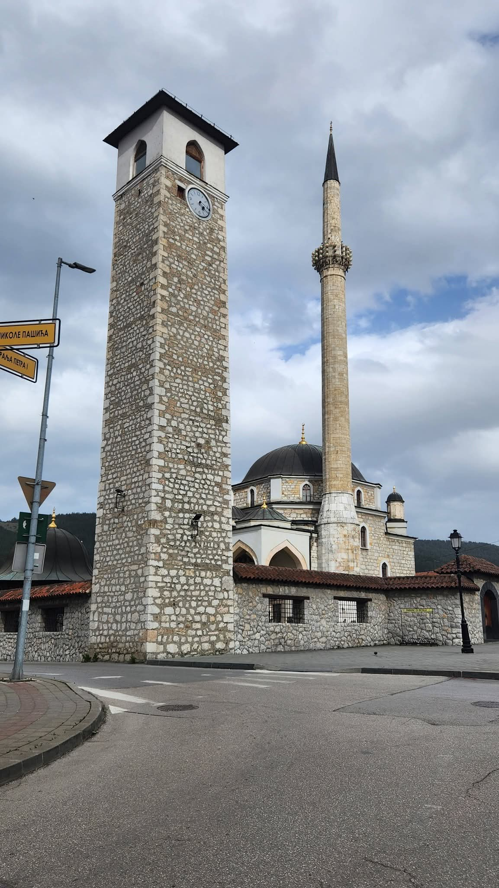
Sahat kula I minaret u Pljevljima
Izazovi nove generacije zato predstavljaju i priliku za promjenu. Mladi Bošnjaci posjeduju znanje, kreativnost, digitalne vještine i sposobnost povezivanja sa različitim sredinama. Ako se njihov potencijal prepozna i podrži, mogu biti važni nosioci kulturnog, ekonomskog i društvenog razvoja. Potrebno je zato ulagati ne samo u rješavanje njihovih problema, već i u stvaranje prostora u kojem mogu razvijati vlastite ideje.
Razumijevanje položaja mladih zahtijeva da ih slušamo. Njihove potrebe i iskustva treba istraživati kroz razgovore, ankete, digitalne platforme i druge oblike neposredne komunikacije. Samo na osnovu stvarnih iskustava moguće je kreirati programe i politike koje odgovaraju njihovim potrebama.
Mladi Bošnjaci danas stoje pred izazovima koji zahtijevaju znanje, podršku i odgovornost cijelog društva. Njihova budućnost neće zavisiti samo od toga koliko će uspjeti sačuvati ono što su naslijedili, već i od toga koliko će imati mogućnosti da stvaraju nešto novo. Identitet i savremenost ne moraju biti suprotstavljeni. Naprotiv, njihovo povezivanje može biti osnova za generaciju koja je svjesna svojih korijena, obrazovana, otvorena prema svijetu i spremna da aktivno učestvuje u oblikovanju vlastite budućnosti.
Objavljeno: 10.09.2026
BOŠNJAČKA OMLADINA: IZMEĐU DRUŠTVENIH IZAZOVA I NOVIH PRILIKA
Bošnjačka omladina danas se nalazi između brojnih društvenih izazova i novih prilika koje donosi savremeno vrijeme. Kao i druge mlade generacije, mladi Bošnjaci suočavaju se sa pitanjima obrazovanja, zapošljavanja, ekonomskog osamostaljivanja, migracija i društvene participacije. Istovremeno, pred njima se otvaraju mogućnosti koje prethodne generacije nisu imale u istoj mjeri – pristup globalnom znanju, digitalnim tehnologijama, međunarodnim iskustvima i novim načinima povezivanja.
Obrazovanje predstavlja jednu od najvažnijih osnova njihove budućnosti. Mladi žele da ulažu u svoje znanje i sposobnosti, ali očekuju i društvo koje će im omogućiti da stečeno znanje pretvore u konkretne prilike. Povezanost obrazovanja sa tržištem rada, mogućnost stručnog usavršavanja i podrška mladim ljudima u razvoju profesionalnih karijera predstavljaju pitanja od posebnog značaja.
Istovremeno, identitet ostaje važan dio života mladih. Pripadnost bošnjačkoj zajednici oblikuje se kroz jezik, kulturu, porodično nasljeđe, tradiciju, vjeru i historijsko pamćenje, ali i kroz savremena iskustva. Mladi danas imaju mogućnost da svoj identitet predstavljaju na različite načine, posebno kroz digitalni prostor. Internet može biti prostor učenja i povezivanja, ali i prostor u kojem mladi sami kreiraju nove oblike kulturnog izražavanja.
Nove tehnologije zato treba posmatrati kao priliku. Mladi mogu koristiti digitalne platforme za promociju jezika i kulture, pokretanje društvenih inicijativa, povezivanje sa vršnjacima iz različitih sredina i predstavljanje vlastitih ideja. Digitalna komunikacija posebno je važna za povezivanje mladih koji žive u različitim gradovima i državama, kao i za održavanje veza sa dijasporom.
Jedan od najvećih izazova ostaje odlazak mladih. Potraga za boljim obrazovanjem, zaposlenjem i životnim standardom često ih vodi prema većim gradovima ili drugim državama. Mobilnost sama po sebi nije negativna i može donijeti nova znanja i iskustva, ali dugoročni odlazak velikog broja mladih predstavlja izazov za razvoj lokalnih zajednica. Zato je potrebno stvarati uslove u kojima će mladi imati stvarnu mogućnost izbora.
Društveno učešće predstavlja još jednu važnu oblast. Mladi treba da imaju prostor da iznesu svoje stavove i pokrenu inicijative. Njihovo uključivanje u kulturne, obrazovne i društvene aktivnosti može pomoći u stvaranju snažnijih zajednica. Posebno je važno da se mladi ne posmatraju samo kao korisnici postojećih programa, već kao partneri u njihovom kreiranju.
Bošnjačka omladina istovremeno predstavlja veliki potencijal. Njihova kreativnost, obrazovanje, digitalne vještine i otvorenost prema novim iskustvima mogu biti osnova za razvoj novih oblika kulturnog i društvenog djelovanja. Mladi mogu povezivati tradiciju sa savremenim tehnologijama, lokalnu zajednicu sa dijasporom i kulturno nasljeđe sa novim načinima izražavanja.
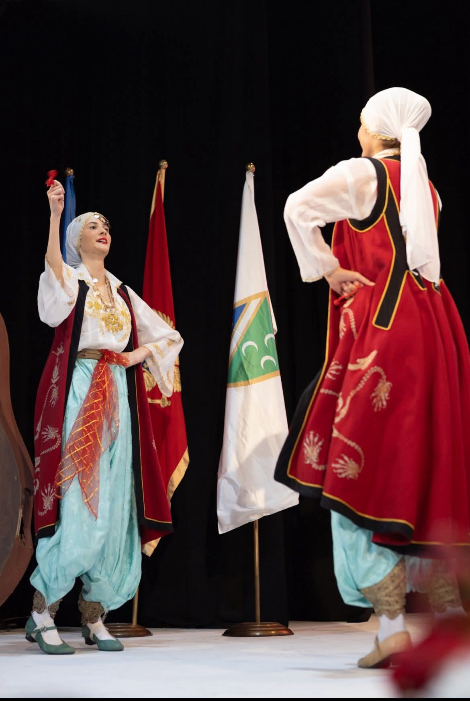
Da bi se taj potencijal iskoristio, potrebno je bolje razumjeti šta mladi zaista žele. Njihove potrebe ne treba pretpostavljati, već ih treba istraživati i dokumentovati. Razgovor sa mladima, digitalne ankete, istraživanja i platforme za razmjenu mišljenja mogu pomoći da se dobije realnija slika njihovog položaja.
Budućnost bošnjačke omladine ne treba graditi samo kroz očuvanje postojećeg, već i kroz stvaranje novih mogućnosti. Društvo koje mladima pruža obrazovanje, sigurnost, mogućnost rada, prostor za kreativnost i pravo na učešće stvara uslove da oni svoje potencijale pretvore u društvenu vrijednost. Izazovi su brojni, ali su brojne i prilike. Ključ je u tome da mladi budu prepoznati kao aktivni nosioci promjena, a ne samo kao generacija kojoj je potrebna podrška.
Objavljeno: 11.09.2026
MLADI BOŠNJACI I POTRAGA ZA PROSTOROM VLASTITOG IDENTITETA
Pitanje identiteta za mlade Bošnjake danas je povezano sa potrebom da pronađu prostor u kojem mogu slobodno izraziti svoju pripadnost, ali i razvijati vlastite stavove, interese i životne izbore. Taj prostor nije samo fizički. On postoji u porodici, školi, kulturnim ustanovama, lokalnoj zajednici, javnom životu i sve više u digitalnom svijetu. U svakom od tih prostora mladi grade sliku o sebi i svom odnosu prema zajednici kojoj pripadaju.
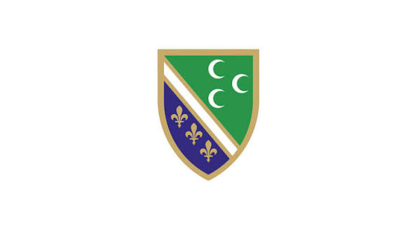
bnvcg.me
Porodica je često prvo mjesto u kojem mladi upoznaju jezik, tradiciju, kulturu, vjeru i porodično pamćenje. Međutim, kako odrastaju, njihovo iskustvo postaje šire. Škola, prijatelji, mediji, internet, putovanja i profesionalno okruženje donose nove vrijednosti i poglede. Identitet se zato razvija kroz susret različitih iskustava, a mladi sve češće traže način da povežu ono što su naslijedili sa onim što sami žele da budu.
Prostor vlastitog identiteta ne znači prostor izolacije. Naprotiv, mladi mogu biti snažno povezani sa svojom kulturom i istovremeno otvoreni prema drugim zajednicama. Poznavanje vlastitog identiteta može im omogućiti sigurniji odnos prema različitostima i pomoći da aktivnije učestvuju u multikulturalnom društvu. Pripadnost ne mora stvarati granice; ona može biti osnova za dijalog i međusobno razumijevanje.
Digitalni prostor danas predstavlja jedno od najvažnijih mjesta na kojem mladi izražavaju sebe. Društvene mreže omogućavaju im da pronađu ljude sličnih interesovanja, razmjenjuju iskustva i stvaraju sadržaje. Za mlade Bošnjake to je prilika da kulturno nasljeđe predstave na savremen način. Jezik, književnost, muzika, historija i tradicija mogu dobiti novu vidljivost kroz digitalne projekte koje kreiraju upravo mladi.
Istovremeno, digitalno okruženje donosi i određene rizike. Mladi su izloženi velikom broju različitih informacija, stereotipa i površnih prikaza identiteta. Zbog toga je važno razvijati sposobnost kritičkog razumijevanja sadržaja i stvarati kvalitetne izvore informacija o kulturi i identitetu. Mladi treba da imaju mogućnost da o vlastitoj pripadnosti uče na način koji je savremen, argumentovan i oslobođen pojednostavljenih predstava.
Važan dio potrage za prostorom identiteta jeste i mogućnost društvenog angažmana. Kada mladi imaju priliku da pokreću inicijative, učestvuju u kulturnim projektima, volontiraju i utiču na odluke koje se odnose na njihov život, njihov osjećaj pripadnosti postaje konkretniji. Zajednica tada nije samo mjesto kojem pripadaju, već prostor u kojem mogu nešto da doprinesu i promijene.
Pitanje identiteta povezano je i sa osjećajem budućnosti. Mladi teško mogu razvijati snažan osjećaj povezanosti sa sredinom ako u njoj ne vide dovoljno mogućnosti za obrazovanje, rad i lični razvoj. Zato prostor identiteta mora biti praćen prostorom za život i napredovanje. Kulturna pripadnost i društvena perspektiva mladih ne mogu se posmatrati potpuno odvojeno.
Poseban izazov predstavljaju migracije. Mladi koji odlaze iz svojih sredina često sa sobom nose jezik, kulturu, porodične vrijednosti i sjećanja. Njihov identitet može se razvijati kroz iskustvo više društava. Umjesto da se takva iskustva posmatraju isključivo kao udaljavanje, potrebno je stvarati načine da mladi ostanu povezani sa zajednicom, da razmjenjuju iskustva i da svojim znanjem doprinesu njenom razvoju.
Potraga za prostorom vlastitog identiteta zato nije znak slabosti ili nesigurnosti. Ona je prirodan dio odrastanja i oblikovanja ličnosti. Mladi žele da znaju odakle dolaze, ali i da imaju slobodu da odluče kuda žele da idu. Njihov identitet može biti istovremeno ukorijenjen i otvoren, svjestan prošlosti i usmjeren prema budućnosti.
Zadatak zajednice nije da mladima unaprijed odredi kakav njihov identitet treba da bude, već da im omogući dovoljno znanja, prostora i slobode da ga sami oblikuju. Kada mladima pružimo mogućnost da uče, stvaraju, govore i učestvuju, stvaramo i prostor u kojem identitet može prirodno da se razvija. Upravo u tom prostoru između nasljeđa i ličnog izbora nastaje identitet nove generacije Bošnjaka – identitet koji čuva svoje korijene, ali ima dovoljno snage i otvorenosti da se suoči sa budućnošću.
Objavljeno: 12.09.2026
IDENTITET BEZ GRANICA: MLADI BOŠNJACI U VREMENU MIGRACIJA I GLOBALIZACIJE
Savremeno društvo obilježeno je intenzivnim migracijama, globalnom povezanošću i sve većom mobilnošću stanovništva. Mladi danas odrastaju u svijetu u kojem mjesto rođenja, obrazovanja, rada i života često nisu isti. Takve promjene posebno utiču na način na koji mladi razumiju vlastiti identitet, pripadnost i odnos prema sredini iz koje potiču. Za mlade Bošnjake migracije i globalizacija predstavljaju istovremeno izazov i priliku: izazov da očuvaju svijest o vlastitim korijenima, ali i priliku da bošnjačku kulturu i vrijednosti predstave u širem, međunarodnom prostoru.
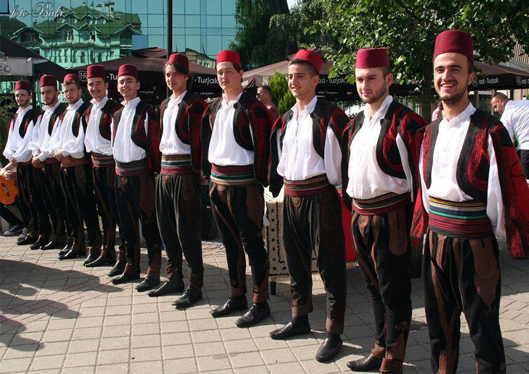
https://www.google.com/
Odlazak mladih iz rodnog kraja ne mora nužno značiti prekid veze sa identitetom. Naprotiv, savremene tehnologije omogućavaju održavanje snažnih porodičnih, kulturnih i društvenih veza bez obzira na geografsku udaljenost. Društvene mreže, digitalne zajednice i različite online platforme mogu postati prostor na kojem mladi Bošnjaci iz Crne Gore, regiona i dijaspore razmjenjuju iskustva, čuvaju jezik, predstavljaju kulturno nasljeđe i stvaraju nove oblike međusobnog povezivanja.
Poseban izazov predstavlja pitanje jezika. U sredinama u kojima mladi svakodnevno koriste više jezika, maternji jezik može postepeno izgubiti svoje mjesto u svakodnevnoj komunikaciji. Zbog toga njegovo očuvanje zahtijeva aktivan odnos porodice, obrazovnih institucija, kulturnih organizacija i samih mladih. Jezik nije samo sredstvo komunikacije; on je jedan od važnih nosilaca kolektivnog pamćenja, kulturnih obrazaca i osjećaja pripadnosti.
Globalizacija, međutim, ne mora biti suprotstavljena očuvanju identiteta. Mladi Bošnjaci mogu istovremeno biti povezani sa evropskim i globalnim društvom, obrazovati se u međunarodnom okruženju, graditi karijere u različitim zemljama i njegovati svijest o vlastitom porijeklu. Identitet koji je dovoljno snažan ne mora se braniti zatvaranjem prema drugima. Naprotiv, otvorenost prema različitostima može doprinijeti njegovom boljem razumijevanju i afirmaciji.
Dijaspora u tom procesu ima posebno mjesto. Mladi koji žive van Crne Gore i Balkana mogu biti važna veza između različitih društvenih i kulturnih prostora. Njihova iskustva, znanja i profesionalne kompetencije mogu doprinijeti lokalnoj zajednici ukoliko postoje mehanizmi za njihovo uključivanje. Zato odnos prema dijaspori ne bi trebalo posmatrati samo kroz pitanje odlaska, već i kroz mogućnost dugoročnog povezivanja i saradnje.
Za očuvanje identiteta posebno je važno da mladi ne budu samo pasivni primaoci tradicije. Oni treba da imaju mogućnost da sami oblikuju načine na koje će kulturno nasljeđe biti predstavljeno novim generacijama. Digitalni sadržaji, savremena umjetnost, dokumentarni projekti, podkasti, fotografija, video produkcija i društvene mreže mogu biti efikasni načini da se elementi bošnjačke kulture približe mladima na njima razumljiv i savremen način.
Identitet se, dakle, ne čuva samo pamćenjem prošlosti, već i stvaranjem budućnosti. Mladi Bošnjaci koji odlaze na školovanje ili rad u druge zemlje mogu ostati povezani sa zajednicom kroz projekte, kulturne inicijative, stručne mreže i digitalne platforme. Na taj način geografija više ne mora određivati granice pripadnosti.
U vremenu globalizacije najvažnije je razvijati identitet koji je istovremeno svjestan svojih korijena i otvoren prema svijetu. Mladi Bošnjaci imaju mogućnost da budu aktivni učesnici različitih društava, a da pritom ne izgube vezu sa vlastitim kulturnim nasljeđem. Budućnost identiteta neće zavisiti samo od toga koliko će mladih ostati u mjestu porijekla, već i od toga koliko će biti sposobni da svoje korijene nose sa sobom i pretvaraju ih u osnovu za nove oblike povezivanja.
Objavljeno: 14.09.2026
OSTATI SVOJ: IZAZOVI OČUVANJA IDENTITETA MLADIH BOŠNJAKA
Očuvanje identiteta mladih Bošnjaka jedno je od pitanja koje u savremenom društvu zahtijeva ozbiljan i odgovoran pristup. Identitet se ne podrazumijeva niti ostaje nepromijenjen kroz vrijeme. On se oblikuje kroz porodicu, jezik, obrazovanje, kulturu, historijsko pamćenje, društvene odnose i lična iskustva. Kod mladih generacija ovaj proces je posebno dinamičan jer odrastaju između vrijednosti koje nasljeđuju i novih obrazaca života koje donose savremena komunikacija, globalizacija i digitalno društvo.
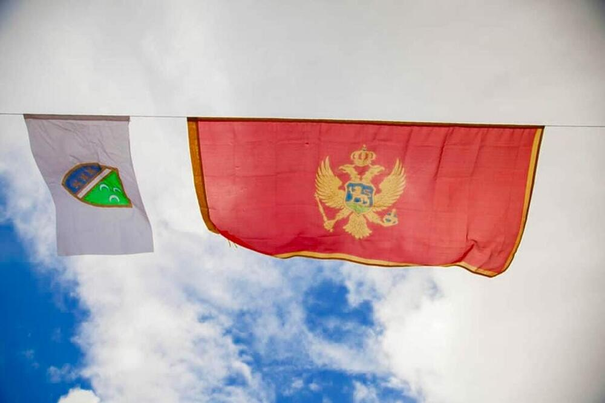
Vijesti.me
Jedan od najvećih izazova jeste prenošenje identiteta između generacija. Tradicionalni obrasci prenosa znanja i vrijednosti više nisu jedini dostupni mladima. Oni svakodnevno dolaze u kontakt sa različitim kulturama, načinima života i vrijednosnim sistemima. Zbog toga očuvanje identiteta ne može biti zasnovano samo na očekivanju da će mlađe generacije automatski prihvatiti ono što su naslijedile. Potrebno je da razumiju zašto su određene vrijednosti, običaji i kulturni obrasci važni.
Porodica u tome ima značajnu ulogu, ali ne može biti jedini nosilac procesa. Obrazovne ustanove, kulturna društva, omladinske organizacije, mediji i lokalne zajednice mogu stvoriti prostor u kojem mladi uče o svom kulturnom nasljeđu na savremen i argumentovan način. Posebno je važno da se mladima omogući da postavljaju pitanja, razgovaraju o identitetu i izražavaju vlastite stavove, bez osjećaja da pripadnost podrazumijeva odricanje od individualnosti.
Važnu ulogu ima i historijsko pamćenje. Poznavanje prošlosti nije samo čuvanje sjećanja na događaje i ličnosti, već razumijevanje procesa koji su oblikovali zajednicu. Mladi koji poznaju vlastitu historiju lakše mogu razumjeti savremene društvene odnose i vlastito mjesto u njima. Pri tome je važno njegovati kulturu sjećanja koja podrazumijeva znanje, odgovornost i poštovanje, a ne podjele i zatvaranje prema drugima.
Poseban izazov predstavlja položaj jezika i kulturnih sadržaja u digitalnom prostoru. Ako mladi najveći dio vremena provode na platformama na kojima dominiraju globalni sadržaji, prirodno je da sadržaji na maternjem jeziku mogu biti manje zastupljeni. To istovremeno otvara mogućnost za stvaranje novih sadržaja. Mladi Bošnjaci mogu biti ne samo korisnici digitalnih platformi već i njihovi kreatori, proizvodeći kvalitetne sadržaje o jeziku, kulturi, historiji, umjetnosti i savremenom životu zajednice.
Očuvanje identiteta ne znači odbacivanje savremenosti. Mladi mogu njegovati bošnjački identitet, a istovremeno biti obrazovani, mobilni, tehnološki kompetentni i otvoreni prema drugim kulturama. Upravo sposobnost da se vlastita pripadnost uskladi sa savremenim načinom života predstavlja jednu od važnih karakteristika identiteta novih generacija.
Zato pitanje „ostati svoj“ ne treba razumjeti kao poziv na izolaciju. Ono prije svega znači imati svijest o tome ko smo, odakle dolazimo i koje vrijednosti želimo sačuvati, ali i biti spreman da se razvijamo i učimo. Identitet koji se ne mijenja ni u jednom segmentu teško može odgovoriti na izazove novog vremena, dok identitet koji se potpuno odrekne vlastitog nasljeđa gubi važan dio svog sadržaja.
Mladi Bošnjaci imaju pravo da identitet definišu na način koji odgovara njihovom vremenu i iskustvu. Zadatak društva nije da im nametne jedinstven model pripadnosti, već da im omogući pristup znanju, kulturi i prostoru za slobodno izražavanje. Očuvanje identiteta najuspješnije je onda kada postane svjestan izbor mladih, a ne samo obaveza koju im nameću prethodne generacije.
Objavljeno: 16.09.2026
MLADI BOŠNJACI IZMEĐU NASLJEĐA PREDAKA I VIZIJE BUDUĆNOSTI
Svaka generacija nasljeđuje određene vrijednosti, iskustva i kulturne obrasce, ali ih istovremeno prilagođava vremenu u kojem živi. Mladi Bošnjaci danas nalaze se upravo na toj granici između nasljeđa predaka i vizije budućnosti. Od njih se očekuje da poznaju i čuvaju ono što su naslijedili, ali i da pronađu nove načine da svoje mjesto u društvu grade kroz obrazovanje, profesionalni razvoj, inovacije i aktivno građanstvo.
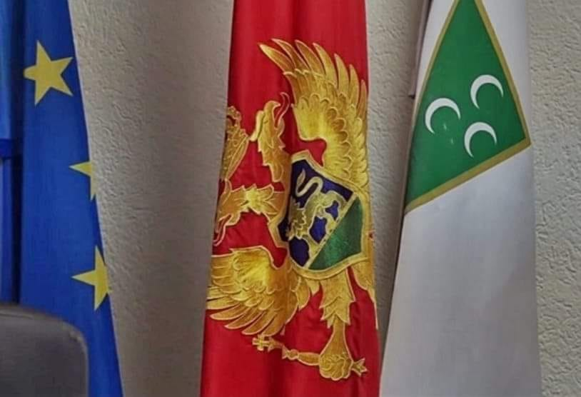
Vijesti BP, IZVOR.
Nasljeđe predaka nije samo zbir običaja, simbola i sjećanja. Ono obuhvata jezik, kulturne obrasce, porodične vrijednosti, historijsko iskustvo, književnost, umjetnost i različite oblike kolektivnog pamćenja. Za mlade je važno da ovo nasljeđe ne doživljavaju kao teret prošlosti, već kao resurs koji može pomoći u razumijevanju vlastitog identiteta.
Istovremeno, budućnost mladih ne može se graditi samo na očuvanju postojećeg. Obrazovanje, zapošljavanje, ekonomska sigurnost, digitalne kompetencije i mogućnost profesionalnog napredovanja pitanja su koja neposredno utiču na kvalitet života mladih Bošnjaka. Ako mladi nemaju dovoljno prilika da svoje potencijale ostvare u sredini u kojoj žive, povećava se vjerovatnoća njihovog odlaska. Zato je pitanje očuvanja identiteta povezano i sa pitanjem stvaranja društvenih uslova u kojima mladi mogu planirati budućnost.
Posebno je značajno podsticati njihovo učešće u javnom životu. Mladi Bošnjaci ne bi trebalo da budu posmatrani samo kao budući nosioci društvenih procesa. Oni su već danas važan dio društva i treba da imaju prostor da učestvuju u donošenju odluka, radu organizacija, kulturnim inicijativama, obrazovnim projektima i lokalnim zajednicama.
Takav pristup doprinosi i prevazilaženju generacijskog jaza. Starije generacije posjeduju iskustvo i znanje koje je važno sačuvati, dok mladi donose nove ideje, tehnologije i drugačije načine komunikacije. Povezivanje ta dva iskustva može biti jedan od najvažnijih preduslova za održiv razvoj zajednice. Tradicija i savremenost ne moraju biti suprotstavljene; njihova vrijednost može biti upravo u međusobnom dopunjavanju.
Veliki potencijal nalazi se i u povezivanju mladih koji žive u različitim sredinama. Mladi Bošnjaci iz Crne Gore, regiona i dijaspore imaju različita iskustva, ali mogu dijeliti osjećaj kulturne povezanosti. Digitalne platforme i savremeni oblici komunikacije omogućavaju stvaranje mreža koje prelaze granice gradova i država. Takve mreže mogu povezivati učenike, studente, stručnjake, umjetnike, aktiviste i mlade preduzetnike.
Budućnost bošnjačke zajednice zato će u značajnoj mjeri zavisiti od toga koliko će mladima biti omogućeno da budu obrazovani, ekonomski samostalni, društveno aktivni i kulturno osviješteni. Očuvanje identiteta nije moguće ako se zanemaruju potrebe svakodnevnog života. Isto tako, ekonomski i profesionalni napredak nema puni smisao ako se prekida veza sa kulturnim i historijskim nasljeđem.
Mladi Bošnjaci imaju priliku da budu generacija koja će spojiti najbolje iz oba svijeta: svijest o vlastitim korijenima i sposobnost da se prilagodi budućnosti. Njihova vizija ne treba da bude samo očuvanje onoga što postoji, već stvaranje novih vrijednosti, institucija, ideja i prilika. Nasljeđe predaka dobija svoj puni smisao tek onda kada postane temelj na kojem nove generacije mogu graditi društvo u kojem žele živjeti.
Objavljeno: 17.09.2026
PERSPEKTIVE MLADIH BOŠNJAKA: OBRAZOVANJE, IDENTITET I DRUŠTVENI ANGAŽMAN
Obrazovanje, identitet i društveni angažman predstavljaju tri važne oblasti kroz koje se može sagledati položaj i perspektiva mladih Bošnjaka u savremenom društvu. Svaka od njih ima posebno značenje, ali su istovremeno međusobno povezane. Obrazovanje mladima pruža znanje i mogućnost profesionalnog razvoja, identitet im daje osjećaj pripadnosti i kontinuiteta, dok društveni angažman omogućava da svoje ideje, potrebe i potencijale pretvore u konkretan doprinos zajednici.
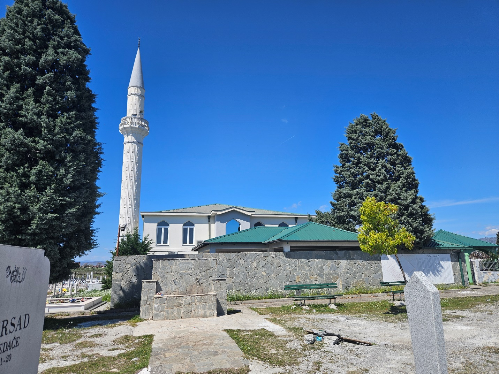
Džamija Muftije Murata ef. Vodoadić na Cijevni
Obrazovanje je jedan od najvažnijih preduslova za društvenu i ekonomsku samostalnost mladih. Kvalitetno obrazovanje ne treba posmatrati samo kao put do zaposlenja, već i kao prostor u kojem mladi razvijaju kritičko mišljenje, samopouzdanje i sposobnost aktivnog učešća u društvu. Za mlade Bošnjake posebno je važno stvarati jednake mogućnosti za obrazovanje i profesionalno napredovanje, uz istovremeno njegovanje svijesti o kulturnom i historijskom nasljeđu.
Identitet u tom procesu ne bi trebalo da bude prepreka ličnom razvoju. Mladi mogu biti uspješni u savremenim profesijama, koristiti globalne tehnologije, obrazovati se u različitim sredinama i istovremeno njegovati bošnjački identitet. Pripadnost nije suprotna otvorenosti prema drugima. Naprotiv, stabilan osjećaj vlastitog identiteta može biti osnova za dijalog, razumijevanje različitosti i ravnopravno učešće u multikulturalnom društvu.
Društveni angažman predstavlja treću važnu dimenziju. Mladi koji imaju priliku da učestvuju u radu organizacija, kulturnih inicijativa, obrazovnih projekata, lokalnih zajednica i drugih oblika javnog djelovanja razvijaju osjećaj odgovornosti prema društvu. Istovremeno, kroz takav angažman njihovi problemi i potrebe postaju vidljiviji. Zato je važno da se glas mladih ne čuje samo kada se govori o njihovoj budućnosti, već i kada se donose odluke koje utiču na njihovu sadašnjost.
Savremene tehnologije otvaraju dodatni prostor za angažman. Mladi danas mogu pokretati inicijative, stvarati sadržaje, povezivati se sa vršnjacima iz drugih gradova i država i promovisati teme koje smatraju važnim. Digitalni prostor može biti mjesto očuvanja jezika i kulture, ali i platforma za obrazovanje, preduzetništvo, razmjenu znanja i društveno djelovanje.
Posebno je važno razvijati veze između mladih koji žive u Crnoj Gori i onih koji su se školovali ili zaposlili u inostranstvu. Migracije ne moraju predstavljati potpuni prekid veze sa zajednicom. Uz kvalitetne programe i otvorene komunikacijske kanale, iskustva i znanja mladih iz dijaspore mogu postati vrijedan resurs za lokalnu zajednicu.
Perspektiva mladih Bošnjaka zato ne zavisi samo od njihovog ličnog truda, već i od društvenog okruženja koje im omogućava da taj trud pretvore u rezultate. Potrebno je stvarati više prilika za obrazovanje, zapošljavanje, kulturno stvaralaštvo, preduzetništvo i javno djelovanje. Samo društvo koje ulaže u mlade može očekivati da će mladi ulagati svoje znanje, energiju i kreativnost u njegov razvoj.
Objavljeno: 18.09.2026
ŠTA ZNAČI BITI BOŠNJAK DANAS? GLASOVI I PERSPEKTIVE MLADIH
Pitanje šta znači biti Bošnjak danas nema jedan jednostavan odgovor. Za različite mlade ljude identitet može imati različita značenja i biti povezan sa jezikom, porodicom, kulturom, vjerom, historijskim nasljeđem, mjestom odrastanja ili ličnim iskustvom. Upravo ta raznolikost pokazuje da bošnjački identitet nije statična kategorija, već živa društvena stvarnost koja se mijenja zajedno sa generacijama koje je nose.
Za jednu mladu osobu identitet može prije svega biti osjećaj pripadnosti porodici i zajednici, dok za drugu može biti snažno povezan sa jezikom, književnošću, kulturnim običajima ili historijskim pamćenjem. Neko će svoj identitet najviše izražavati kroz kulturni angažman, neko kroz obrazovanje i profesionalni rad, a neko kroz svakodnevni život i odnose sa ljudima iz različitih zajednica. Nijedan od tih pristupa ne treba posmatrati kao jedini ispravan.
Savremeni mladi odrastaju u drugačijem društvenom kontekstu od generacija prije njih. Internet, društvene mreže, migracije i globalna mobilnost omogućili su kontakte sa različitim kulturama i načinima života. Mladi Bošnjaci zbog toga istovremeno mogu biti snažno povezani sa lokalnom zajednicom i dio šireg evropskog i globalnog prostora. Ta višestruka pripadnost ne mora biti izvor konflikta, već može predstavljati bogatstvo ličnog i društvenog iskustva.
Jedno od važnih pitanja jeste koliko mladi poznaju vlastito kulturno i historijsko nasljeđe. Očuvanje identiteta zahtijeva znanje, ali i savremene načine njegovog prenošenja. Ako se mladima kultura predstavlja samo kroz tradicionalne forme i bez prostora za njihovo aktivno učešće, postoji opasnost da se udalje od sadržaja koji im se čine nepovezanim sa njihovim svakodnevnim životom. Zbog toga je potrebno omogućiti mladima da sami učestvuju u stvaranju novih oblika kulturnog izražavanja.
Biti Bošnjak danas može značiti i biti aktivan član društva u kojem živiš. Pripadnost vlastitoj zajednici ne isključuje odgovornost prema široj društvenoj zajednici. Mladi Bošnjaci mogu istovremeno čuvati svoje kulturne posebnosti i doprinositi društvu kroz obrazovanje, profesionalni rad, nauku, kulturu, sport, preduzetništvo i javni angažman.
Važno je zato slušati stvarne glasove mladih. Umjesto pretpostavki o tome šta oni misle i šta im je potrebno, potrebno je razvijati istraživanja, ankete, javne razgovore i digitalne platforme putem kojih mogu iznijeti vlastita iskustva. Posebno treba čuti mlade iz različitih sredina, jer se njihova iskustva mogu značajno razlikovati u zavisnosti od mjesta života, obrazovanja, ekonomskih mogućnosti i porodičnog okruženja.
Odgovor na pitanje šta znači biti Bošnjak danas zato treba tražiti upravo među mladima. Njihove perspektive pokazuju da identitet može biti istovremeno korijen i prostor za razvoj. On može čuvati vezu sa prošlošću, ali i omogućiti mladima da slobodno oblikuju vlastiti odnos prema budućnosti.
Objavljeno: 20.09.2026
NOVA GENERACIJA BOŠNJAKA: IDENTITET, ODGOVORNOST I BUDUĆNOST
Nova generacija Bošnjaka odrasta u vremenu velikih društvenih promjena. Digitalizacija, migracije, promjene na tržištu rada, globalna komunikacija i sve veća mobilnost mijenjaju način na koji mladi uče, rade, komuniciraju i grade odnose. U takvom okruženju identitet dobija nove dimenzije, dok pitanje odgovornosti prema zajednici postaje sve važnije.
Identitet nove generacije ne može se posmatrati odvojeno od obrazovanja i ličnog razvoja. Mladi koji imaju pristup znanju i kvalitetnim obrazovnim mogućnostima imaju veći kapacitet da razumiju vlastito nasljeđe, ali i da kritički sagledaju savremeni svijet. Obrazovanje omogućava da se tradicija ne prihvata samo kao naslijeđena činjenica, već da se njene vrijednosti razumiju, preispituju i prenose na način koji odgovara novom vremenu.
Odgovornost prema zajednici ne znači samo očuvanje postojećih institucija i običaja. Ona podrazumijeva spremnost da se doprinese njenom razvoju. Mladi mogu tu odgovornost pokazati kroz volontiranje, kulturni rad, obrazovne projekte, humanitarne aktivnosti, preduzetništvo, zaštitu kulturnog nasljeđa i učešće u javnom životu. Svaki od tih oblika angažmana doprinosi stvaranju aktivne i povezane zajednice.
Posebno je važno razvijati osjećaj odgovornosti prema vlastitoj budućnosti. Mladi ne bi trebalo da budu samo posmatrači društvenih procesa. Oni treba da postavljaju pitanja, traže rješenja i učestvuju u kreiranju politika koje se odnose na obrazovanje, zapošljavanje, kulturu i položaj mladih. Njihove potrebe moraju biti dio javnog dijaloga.
Istovremeno, nova generacija ima mogućnost da identitet predstavi na način koji je razumljiv savremenom društvu. Digitalni mediji omogućavaju mladima da stvaraju sadržaje o bošnjačkoj kulturi, historiji, književnosti i savremenom životu. Time se identitet ne čuva samo kroz sjećanje, već i kroz kreativnost i stvaralaštvo.
Veliki potencijal predstavlja povezivanje mladih iz Crne Gore sa Bošnjacima u regionu i dijaspori. Različita iskustva mogu biti osnova za razmjenu znanja i stvaranje zajedničkih projekata. Mladi koji žive van zemlje mogu biti važni partneri u obrazovanju, kulturi, poslovnom povezivanju i međunarodnoj saradnji.
Budućnost nove generacije Bošnjaka ne treba posmatrati samo kroz pitanje brojnosti ili demografskih trendova. Mnogo je važnije kakav će biti kvalitet njihovog obrazovanja, koliko će biti uključeni u društvene procese, kakve će prilike imati i koliko će biti sposobni da povežu identitet sa savremenim životom.
Nova generacija ima priliku da izgradi identitet koji je svjestan svojih korijena, ali nije zatvoren prema svijetu. Odgovornost prema prošlosti treba da bude praćena odgovornošću prema budućnosti. Upravo mladi mogu biti generacija koja će kulturno nasljeđe pretvoriti u osnovu za nove ideje, saradnju i društveni napredak.
Objavljeno: 22.09.2026
BOŠNJACI SUTRAŠNJICE: IDENTITET, IZAZOVI I PERSPEKTIVE MLADIH
Budućnost svake zajednice u velikoj mjeri zavisi od toga kakve mogućnosti pruža mladim generacijama. Kada je riječ o mladim Bošnjacima, pitanje budućnosti ne odnosi se samo na očuvanje identiteta, već i na obrazovanje, zaposlenje, društvenu uključenost, kulturno stvaralaštvo i mogućnost da svoje životne planove ostvare u stabilnom i podsticajnom okruženju.
Jedan od najvećih izazova jeste odlazak mladih. Bolje obrazovne i profesionalne prilike u drugim sredinama predstavljaju snažan razlog za migracije. Međutim, odlazak ne mora nužno značiti gubitak pripadnosti. Važno je razvijati modele koji će omogućiti da mladi, bez obzira na mjesto života, ostanu povezani sa svojim krajem, porodicom i zajednicom. Takve veze mogu se održavati kroz kulturne, obrazovne, poslovne i digitalne mreže.
Identitet će u budućnosti sve više biti oblikovan u prostoru različitih uticaja. Mladi će živjeti između lokalnog i globalnog, tradicionalnog i savremenog, fizičkog i digitalnog prostora. U takvim okolnostima ključno je razvijati identitet koji nije zasnovan na strahu od različitosti, već na svijesti o vlastitoj vrijednosti. Poznavati sebe i svoje nasljeđe znači biti bolje pripremljen za komunikaciju sa drugima.
Posebnu pažnju treba posvetiti jeziku i kulturi. Ako želimo da buduće generacije poznaju bošnjačko kulturno nasljeđe, potrebno je ulagati u obrazovne i kulturne programe koji će biti prilagođeni njihovim interesovanjima. Knjiga, muzika, film, digitalni sadržaji, savremena umjetnost i društvene mreže mogu postati važni prostori u kojima se identitet razvija i izražava.
Istovremeno, budućnost mladih Bošnjaka zavisi od njihovih ekonomskih perspektiva. Kulturna i identitetska pitanja ne mogu se odvojiti od pitanja zaposlenja, stambene sigurnosti, profesionalnog razvoja i kvaliteta života. Mladi koji imaju realnu mogućnost da grade stabilnu budućnost imaju i više prostora da se aktivno uključe u razvoj zajednice.
Društveni angažman predstavlja još jednu važnu perspektivu. Potrebno je stvarati prostor u kojem mladi mogu predlagati inicijative, učestvovati u radu organizacija, pokretati projekte i biti dio procesa donošenja odluka. Njihovo uključivanje ne treba da bude simbolično, već stvarno i sadržajno.
Bošnjaci sutrašnjice neće biti identični generacijama koje su im prethodile. To je prirodan proces. Svaka generacija oblikuje identitet u skladu sa svojim iskustvom i okolnostima. Zadatak nije zaustaviti promjene, već osigurati da se u tim promjenama sačuvaju vrijednosti, znanje i kulturno nasljeđe koje zajednica smatra važnim.
Budućnost zato nije nešto što će se mladima jednostavno dogoditi. Ona se gradi njihovim obrazovanjem, radom, kreativnošću, društvenim angažmanom i odnosom prema vlastitom identitetu. Ako mladima pružimo priliku da budu obrazovani, slobodni, odgovorni i aktivni, onda ne čuvamo samo identitet jedne zajednice — stvaramo temelje za njenu održivu i otvorenu budućnost.
Zaključak
Projekat „Mladi Bošnjaci i izazovi modernog društva“ nastojao je otvoriti prostor za bolje razumijevanje položaja mladih Bošnjaka, njihovih potreba, stavova, izazova i perspektiva u savremenom društvu. Kroz obrađene teme posebna pažnja posvećena je pitanjima identiteta, obrazovanja, kulturnog i historijskog nasljeđa, migracija, društvenog angažmana, savremenih društvenih promjena i budućnosti mladih.
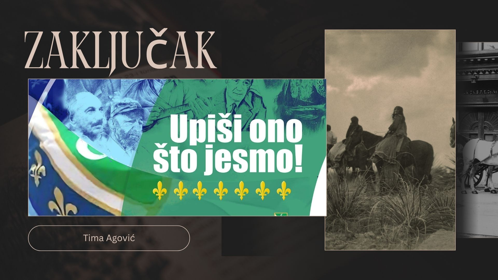
Posebnu vrijednost projekta predstavlja činjenica da su, pored tematskih tekstova, na ovoj web platformi predstavljeni i rezultati ankete sprovedene među mladima. Anketa je realizovana online, čime je omogućeno da se u istraživanje uključi veći broj mladih i da svoje stavove, iskustva i mišljenja iznesu na neposredan i jednostavan način.
Distribucija ankete odvijala se putem online komunikacije. Link za popunjavanje upitnika neposredno je prosljeđivan potencijalnim učesnicima putem različitih digitalnih komunikacijskih kanala, čime je anketa distribuirana direktno među mladima. Na taj način pristizali su odgovori učesnika, koji su nakon završetka prikupljanja sistematizovani i analizirani.
Dobijeni odgovori predstavljaju važan dio projekta jer omogućavaju da se o položaju mladih Bošnjaka ne govori samo na osnovu opštih pretpostavki, već i kroz njihove konkretne odgovore i iskazane stavove. Rezultati ankete pružaju uvid u način na koji mladi posmatraju vlastiti identitet, kulturno nasljeđe, obrazovanje, društveni angažman, mogućnosti koje imaju u sredini u kojoj žive, kao i izazove sa kojima se suočavaju.
Nakon završetka online istraživanja izvršena je analiza prikupljenih odgovora, a rezultati i zaključci analize objavljeni su na ovoj web platformi. Time je cijeli proces istraživanja učinjen dostupnim javnosti, od tematskog predstavljanja problema do prikupljanja mišljenja mladih i analize dobijenih podataka.
Važno je naglasiti da online anketa, kao i svako istraživanje, predstavlja jedan oblik uvida u stavove učesnika koji su u njemu učestvovali. Njeni rezultati ne predstavljaju nužno stavove svih mladih Bošnjaka, niti se mogu tumačiti kao jedinstven glas cijele zajednice. Mladi Bošnjaci nisu homogena grupa i njihova iskustva i stavovi mogu biti različiti. Upravo zbog toga rezultate treba posmatrati kao vrijedan doprinos razumijevanju određenih pitanja i kao osnovu za dalje razgovore, istraživanja i inicijative.
Jedan od važnih zaključaka projekta jeste da pitanje identiteta mladih treba posmatrati u širem društvenom kontekstu. Identitet nije odvojen od obrazovanja, ekonomskih mogućnosti, društvene uključenosti, migracija i kvaliteta života. Mladi žele da sačuvaju vezu sa svojim kulturnim i historijskim nasljeđem, ali istovremeno žele mogućnost da se obrazuju, profesionalno razvijaju, putuju, rade i grade budućnost u skladu sa savremenim društvenim okolnostima.
Zbog toga očuvanje identiteta ne treba posmatrati kao povratak prošlosti, već kao proces koji se nastavlja kroz nove generacije. Jezik, kultura, tradicija i historijsko pamćenje mogu biti očuvani samo ako pronađu svoje mjesto i u savremenom životu mladih. Digitalni prostor u tom smislu može imati značajnu ulogu, ne samo kao sredstvo komunikacije već i kao prostor za obrazovanje, kulturno stvaralaštvo, povezivanje i društveni angažman.
Projekat je takođe pokazao značaj stvaranja prostora u kojem mladi mogu biti saslušani. Njihove potrebe i perspektive ne bi trebalo posmatrati samo kroz statistiku ili opšte pretpostavke. Direktna komunikacija i istraživanje njihovih stavova predstavljaju važan korak ka razumijevanju problema sa kojima se suočavaju i ka kreiranju kvalitetnijih odgovora institucija, organizacija i šire zajednice.
Budućnost mladih Bošnjaka zavisiće od brojnih faktora, ali među najvažnijima ostaju obrazovanje, mogućnost zapošljavanja, društvena uključenost, očuvanje kulturnog identiteta i stvaranje prostora za aktivno učešće mladih. Istovremeno, potrebno je razvijati veze između mladih koji žive u Crnoj Gori i onih koji su zbog obrazovanja, rada ili drugih razloga napustili svoje mjesto porijekla.
Ovaj projekat zato ne treba posmatrati kao konačan odgovor na sva pitanja koja se odnose na mlade Bošnjake, već kao jedan korak ka njihovom boljem razumijevanju i otvaranju prostora za dalji dijalog. Objavljeni tekstovi, online anketa i analiza prikupljenih odgovora zajedno predstavljaju pokušaj da se glas mladih učini vidljivijim i da se o njihovom položaju govori na osnovu tema i iskustava koja su za njih zaista značajna.
Konačna vrijednost projekta ogleda se upravo u povezivanju znanja, razgovora i iskustava mladih. Ako ova web platforma podstakne nove diskusije, nova istraživanja, inicijative i veće uključivanje mladih u društveni život, onda je ostvarila jednu od svojih najvažnijih svrha.
Mladi Bošnjaci nisu samo nasljednici prošlosti. Oni su aktivni učesnici sadašnjosti i kreatori budućnosti. Njihove ideje, znanje, iskustva i potrebe treba da budu dio šireg društvenog razgovora. Upravo kroz razumijevanje njihovih perspektiva, stvaranje jednakih mogućnosti i očuvanje prostora za kulturnu pripadnost i društvenu otvorenost moguće je graditi budućnost u kojoj će mladi imati više razloga da ostanu povezani sa svojom zajednicom i da u njenom razvoju aktivno učestvuju.
Napomena o istraživanju: Anketa predstavljena na ovoj web platformi sprovedena je online, putem neposredne digitalne komunikacije i distribucije linka za popunjavanje upitnika. Prikupljeni odgovori su nakon završetka istraživanja obrađeni i analizirani, a rezultati analize objavljeni su na sajtu u okviru projekta „Mladi Bošnjaci i izazovi modernog društva“, čija je autorica Tima Agović, uz podršku Fonda za manjine.
Objavljeno: 23.09.2026